生成时间：2026-09-25T11:53:56+08:00
今日保留论文数：13
内容构成：今日新文 13 篇；补充推荐 2 篇；经典旧文精读 0 篇
阅读分层：重点精读 8 篇；相关简报 7 篇。精读依据科学贡献筛选，简报保留方法、结论及局限。
补充推荐论文数：2
数据源警告
- 本次有 3 个数据源访问异常；完整错误已保留在运行日志中，日报只显示摘要。
- 期刊 RSS：3 个 feed 访问异常，主要影响 Nature/Science 等补充来源，不影响 arXiv 主流程继续生成。
- 主要错误类型：回退旧缓存，最新条目未确认 3 次。
高能天体物理重点
1. DETECT: Real-Time Identification of Transients with DESI Spectroscopic Redshift
- 来源：arXiv / astro-ph.HE
- 链接：https://arxiv.org/abs/2609.28951
- 作者：Yu-Hsing Lee, Ting-Wan Chen, Ze-Ning Wang, Sheng Yang, Limeng Deng, Chuan-Jui Li, K. C. Chambers, Thomas de Boer
- 公告 / 来源日期：2026-09-25
- 阅读层级：重点精读
- 评分：novelty 8/10，importance 8/10，relevance 9/10，final 9.35/10
- 推荐理由：DETECT将大规模DESI宿主红移用于实时瞬变筛查，并给误配与完备度验证，对多信使随访有实用贡献。
中文题目：DETECT：用DESI宿主红移为暂现源筛选补上距离，但不把匹配当分类
做了什么：大量光学暂现源只有位置和光变，没有自身光谱；缺少距离时，同样亮度可能对应普通近邻超新星，也可能是遥远的极端爆发。DETECT把TNS新报告与约2200万条DESI光谱交叉匹配，结合星系在暂现源方向上的光学尺度判定宿主，再用红移、光变和宿主性质筛选值得跟进的对象。关键改进是避免“离哪个星系中心最近，就属于哪个星系”的简单误配，并保留需要人工判断的状态。
在2020—2024年约12万条去除银河系对象和AGN的TNS样本中，约1.68万获得清洁的人工核验宿主关联，约占全部样本15%；进一步有约5400个对象具有通过质量控制的峰值拟合。条件匹配准确率高不等于全样本覆盖率高。论文展示了识别高亮度候选、透镜线索和排除千新星假阳性的用途，输出的是后随优先级，不是自动给每个源确定物理类型。
为什么重要：在光谱资源有限的情况下，宿主已有红移能迅速把视亮度变成距离相关信息，帮助发现值得花时间观测的极端对象。本文的价值在于把检索、几何关联、质量标记与人工回执接成可运行流程，并用实际巡天样本展示覆盖损失发生在哪里；它没有消除DESI目标选择偏差，也没有使光度分类等价于光谱分类。
理论 / 观测 / 仪器方法价值：可借鉴的是“候选召回—可靠红移—方向尺度归一—歧义标记—后随反馈”的顺序。对于中微子或其他多信使暂现源关联，同样应先传播定位与宿主不确定性，再计算光度和事件优先级。DETECT的30角秒搜索半径和轮廓阈值基于其对象与图像，移植到更大定位区必须重新标定背景偶合率。
为什么应该关注：值得关注的是错误关联如何产生“异常高光度”：它既可能是需要剔除的误配，也可能提示背景源被前景星系透镜放大。应把异常作为复核入口，联合历史光变、光谱和高分辨图像检验。本文对千新星候选的后续否定尤其实用，说明快速衰减只够触发后随，不能在缺少多年档案检查时直接宣称并合对应体。
展开详细解读：文章讲解、背景、理论、重点章节、图表与相关工作
文章详细讲解
科学问题。 暂现源发现速度超过逐个获取光谱的能力。若可借用宿主红移，就能估算绝对星等、物理偏移和宿主环境，但首先必须回答“这真是宿主吗”。大星系边缘的爆发可能离另一颗小星系中心更近，碎片化图像还会给同一个星系制造多个目录对象。
作者怎么做。 管线逐小时读取TNS，另有每日更新和已跟进对象复查。HEALPix索引先快速找30角秒内光谱，再结合Legacy Surveys形状，计算方向光半径归一距离。失败的光谱红移不接受为宿主；星光谱用于提示银河系源，类星体光谱只在核区条件下作为候选宿主。系统输出确认、待判断、无关联三种状态，并保留人工决定。
关键结果。 历史交叉匹配经过视觉核验得到约1.68万个清洁对象，之后在流量空间拟合多带光变，要求峰值落在实际时间覆盖中，形成约5400个Gold对象。高亮度筛选找出需要检验的稀有候选，但有些位于明亮星系核区，AGN变化仍然可行；两例曾像千新星的快速源，加入更深或多年资料后被排除。
局限和下一步。 匹配阈值是在视觉核验样本上标定并回顾评估，不能冒充完全独立测试。目录覆盖、低表面亮度宿主缺失和固定搜索半径会影响样本构成。下一步更重要的是在新事件上盲测匹配、记录错误关联的代价，并把没有光谱宿主的事件继续交给其他方法，而不是把它们从科学样本中悄悄删除。
关键结果是怎么做出来的
首先将DESI DR1主光谱与EDR中缺失于DR1的小部分条目合并，避免将重新处理的同一次观测当成独立宿主证据。空间索引只负责快速召回，不决定天体关联；精确角距离、光谱质量和图像形状在后续分别使用。
其次计算沿暂现源方向的光半径。椭圆长轴方向延伸大，同样的角偏移可能合理；短轴方向相同偏移则更可疑。本文按轮廓类型设置不同阈值：DEV/SER/COMP与EXP/REX的阈值分别为4和8，并给很小的半径设置0.5角秒下限。阈值是操作性标定，不能视为所有宿主的物理边界。
第三步处理歧义而非强行选第一名。次佳候选足够接近、光谱红移冲突或位于阈值外的可疑邻居都触发人工检查；同一大星系的多个碎片可借助红移和光学范围合并。图2用一个实际案例解释为什么较远的星系中心反而是更可信的宿主。
第四步把有红移的关联转换为可用光度。作者先在流量空间清理、叠加同夜数据，要求单带至少5次独立观测，再拟合峰值并排除落在观测范围外的峰。约1.68万关联与约5400个Gold对象是不同层次，后者的分布受采样与亮度质量切进一步影响。
最后用后验资料检验候选意义。AT2020bgp最初的快速变暗可像千新星，但数年后的再次爆发反对一次性并合解释；AT2020abut加入ZTF强制测光后也不再成立。本文因此提供了一个有价值的反例：自动筛选正确地找出了“需要看”的源，物理结论却必须随新证据下调。
展开背景、理论、公式、模型和章节导读
背景知识
视星等只描述地球接收到的流量，绝对星等需要距离。缺乏红移时，亮度与距离退化会妨碍挑选超亮超新星、透镜放大事件和弱而快速的爆发。已有星系光谱能部分弥补这一缺口，所以宿主关联不是附属标签，而是后续物理推断的入口。
星系不是点源。其光分布有尺寸、椭率、亮核和低表面亮度外盘，爆发也不一定落在中心。最近邻规则忽略这些信息，而方向光半径让偏移变成相对于星系尺度的无量纲量，从而使不同大小和方向的候选更可比较。
目录检索的完备率与分类器准确率是两个问题。即使在有合格候选的对象中几乎总能选对，巡天没有观测到的宿主仍无法被找出。本文约59%的TNS样本落在DESI覆盖区，总体约15%获得清洁关联，这两层选择必须在推算未来后随收益时保留。
“异常亮”并非一种物理类型。错误红移、引力透镜、AGN变化和本征高光度爆发都能产生异常。核区位置、红外颜色和历史复发能帮助分流，但每项证据都有适用范围；星系呈AGN颜色也不意味着其中不可能同时发生真正超新星。
基础理论 / 方法脉络
方向光半径解决的是几何匹配，而非完整的贝叶斯宿主概率。它利用椭圆形状，把位置偏移除以同方向光学尺度。还缺少的成分包括未探测宿主先验、定位误差、星系背景密度与爆发在宿主内的分布；因此作者保留人工歧义状态是合理的。
红移到光度距离需指定宇宙学；角偏移到物理偏移则使用角直径距离。两者相差红移因子，不能拿计算绝对星等的距离直接乘角度。对近邻源，特殊速度也可能影响红移距离，尤其在追求精确光度分类时。
宽带光度还需要消光及K改正。K改正把红移后的观测波段与所定义的静止系波段联系，依赖谱形和滤光片。本文为快速筛选采用近似处理，日报采用一般定义说明流程，不把其简化的红移带宽项当成适用于所有超新星谱的精确修正。
光变拟合的目标是避免直接用最亮采样点低估峰值，但稀疏数据外推也可能虚构高峰。因此要求峰前峰后都有数据，比只给一个很小的拟合参数误差更重要。流量空间对低信噪测量更自然；删除低信噪点本身也可能影响选择，复现时应检查与保留强制测光的结果差异。
公式与推导
以下把几何、光度与样本质量连起来。第一步是椭圆在方向φ上的半径：
a、b为图像椭圆半长轴、半短轴，φ从长轴计，三者需使用同一角度单位。φ=0得到a，φ=π/2得到b，说明归一尺度随方向变化。
第二步定义无量纲偏移：
它把不同大小星系放到共同几何尺度，但不自动给出关联概率。本文形态阈值和半径下限是经验规则，必须结合错误关联率检验。
第三步由红移计算平直宇宙中的光度距离，作为标准背景：
H的单位与c统一后得到长度；本文采用固定平直ΛCDM参数。给一个精确红移并不意味着距离的所有系统误差消失。
第四步得到距离模数与宽带绝对星等：
A为消光，K为按指定滤光片与谱定义的改正。文中快速近似的带宽项必须核对其符号与谱约定；这里不将它推广为普适K改正公式。
第五步把错误宿主造成的距离误差显式写出：
这是固定m、A和K的教学估算。误赋更大距离会令M更负、看起来过亮，说明“极端光度”与“宿主可信度”必须一起检查。
第六步计算物理偏移：
角度必须转成弧度；近邻与远处样本相同角秒偏移不对应相同kpc。这正是本文不同超新星类型的角偏移差不宜直接解读为不同前身分布的原因。
第七步是同夜流量的误差加权叠加：
该式假设测量误差独立；共同零点误差不会因多次测光完全消失。先叠加再拟合能改善峰值估计，但不能弥补峰顶完全没有覆盖。
最后用概率链区分覆盖与准确率：
这是概念分解，三因子依赖亮度和环境，不能把样本平均值随意当独立常数。图4主要反映这条链的总体结果。
模型拟合 / 应用方法
匹配层的输入是暂现源位置、光谱质量、红移和光学椭圆参数。先保留全部空间候选再做质量筛选，可把“没候选”与“候选被否”分开。视觉核验同时用于校准和回顾检验，因此部署到新数据时应另留独立测试集，避免把调阈值收益当外推性能。
光变层在各波段拟合峰值，至少五个独立观测点只是起点。作者另要求拟合峰信噪比达标、峰时位于观测时间范围内；这些条件控制外推，但会排掉短促而缺少峰前观测的事件。统计稀有源发生率时必须建模这类时间选择。
物理筛选层结合光度、核区位置和宿主信息。一个超亮候选若与宿主同样明亮且位于中心，AGN仍是合理替代解释；一个用前景透镜红移算得异常光度的背景源，也不能直接记录为该红移的本征超亮源。
误差诊断应按链条追踪：宿主选错会使整个距离推断离散跳变；光变峰值误差是连续分布；K改正与消光是不完全已知的系统量。将三者压成一个小高斯误差条会掩盖真正风险。本文的人工状态和档案复核值得保留，不能在自动化时删掉。
重点章节 / 结果段落怎么读
先读II.2与II.5，抓住可靠光谱条件、方向光半径、不同形态阈值与歧义判定，再用图2手算最近邻为何会错。
接着读III历史样本构建，把12万、1.68万和5400三个分母依次分清。图4的恢复比例与摘要匹配正确率不能混用。
最后读IV.1的峰值质量控制和快速暂现源反例，再读实际运行案例。重点看新资料如何改变最初分类；将“触发候选”与“确认事件”视为两个不同输出。
关键图表与解读
图2：最近星系未必是宿主
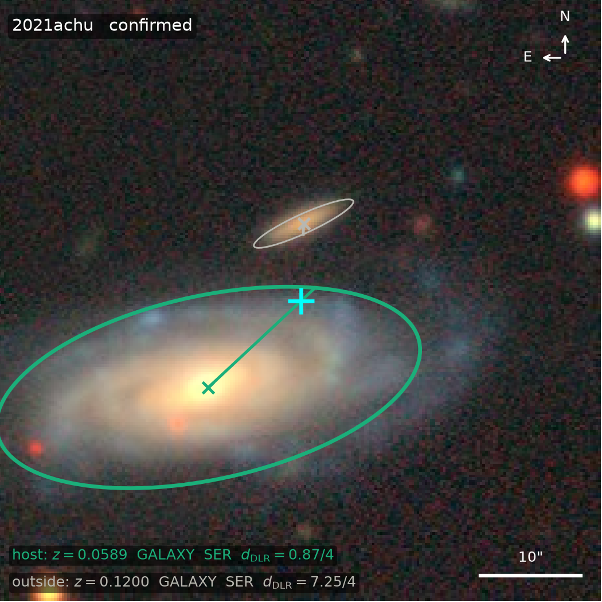
图注：Legacy Surveys DR10的grz图像，北上东左，标尺10角秒，青色十字为暂现源。约8角秒处灰色小星系红移0.120，半光半径约2角秒，归一化距离约7；约13角秒处绿色旋涡星系红移0.0589，半光半径约14角秒，归一化距离约0.9。绿线标沿暂现源方向的光半径。
怎么看这张图：先看暂现源是否处于星系光学延伸范围，再看角距离。最近邻会把小星系的较大红移赋给源，使距离模数大约偏高1.6等；方向光半径纠正的是几何误配，不能保证所有低表面亮度或被分割宿主都能识别。 支持本篇核心证据及其适用边界。
来源与置信度：arXiv HTML；source verified；https://arxiv.org/html/2609.28951v1/paper_img/galaxy_model.png
图4：宿主红移的实际覆盖率
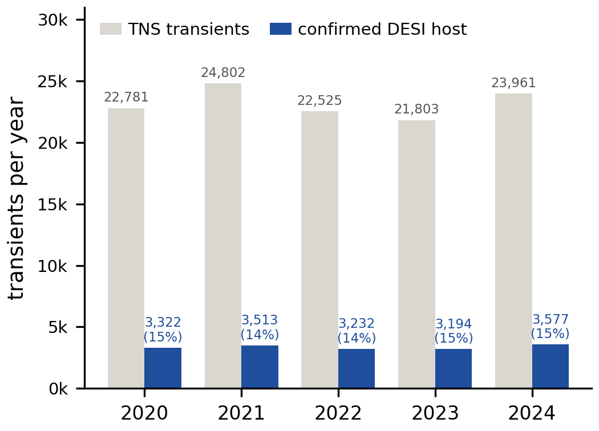
图注：2020—2024年逐年的TNS样本恢复情况。灰柱为剔除银河系对象和AGN后的暂现源，总量约12万；蓝柱为具有人工确认DESI光谱宿主的约1.68万个对象，括号给出当年比例。各年约15%；全样本约59%落在DESI覆盖区，约三分之一在30角秒内有DESI星系光谱。
怎么看这张图：这里分母是全部TNS对象，所以约15%是端到端覆盖率，不是匹配分类器只有15%正确。要同时报告覆盖区比例、光谱可用率和条件匹配准确率，才能估算后随资源真正节省多少；不能将高匹配正确率误当成全巡天的红移完备率。 支持本篇核心证据及其适用边界。
来源与置信度：arXiv HTML；source verified；https://arxiv.org/html/2609.28951v1/paper_img/CM_results_with_TNS.png
强相关工作
Gupta等2016年的超新星宿主识别工作提供了方向光半径方法的直接背景，Sullivan等关于超新星宿主的研究则说明关联结果如何影响前身环境推断。DETECT延续几何匹配思路，但在DESI光谱与TNS流上加入可运行的筛选和回执；本文采用的半光半径与阈值应在自己的目录上重新标定。
TiDES等大规模暂现源光谱计划解决的是后续光谱资源与分类问题，与复用已有宿主红移互补。本文的千新星案例又说明，possis模型或AT2017gfo光变只能提供候选比较，长时间档案里的重复爆发可能直接否定并合解释。研究设计应同时准备快速触发和后续排除路径。
同一事件 / 同类源线索：
相似工作：
基础理论 / 方法工作：
相反观点 / 张力线索：
（未提供）
2. Observational signatures of warped accretion flows in tidal disruption events
- 来源：arXiv / astro-ph.HE
- 链接：https://arxiv.org/abs/2609.29787
- 作者：Andrew Mummery, Eliot Quataert
- 公告 / 来源日期：2026-09-25
- 阅读层级：重点精读
- 评分：novelty 8/10，importance 8/10，relevance 9/10，final 9.35/10
- 推荐理由：TDE翘曲盘提出颜色、延迟X射线与回响三项可检验预言，需区分初步支持和机制确证。
中文题目：翘曲的潮汐瓦解盘：把红颜色、延迟X射线和光学回声放进同一几何模型
做了什么：恒星被黑洞潮汐撕裂后形成的盘，未必与黑洞自旋赤道共面。作者给盘指定一个内区趋于对齐、外区保持倾斜且随半径扭转的结构，计算内盘对外盘的辐照、自遮影、各视角能谱及耀发回声。模型可同时产生较红的光学/紫外连续谱、被外盘遮住的X射线内区，以及内盘耀发之后的延迟光学响应；在一组示例参数下，约10倍X射线耀发可对应约2倍光学/紫外变化。
这是一项半解析前向建模研究，没有对某个TDE完成统计拟合。文中提及AT2019dsg、AT2022dsb和AT2018fyk，目的是展示可检验的现象联系。其价值在于提供共同几何框架和观测诊断，不在于已经证明这些事件都由盘翘曲造成，更不是已经测出了它们的黑洞自旋。
为什么重要：TDE的光学与X射线表现差异很大，延迟出现X射线既可能源于内盘晚形成，也可能源于早已存在的内盘后来变得可见。本文把后者量化，并将它与外盘辐照、颜色及回声联系起来。若多个诊断能在同一事件上联合成立，就比单独拟合一条光变更有辨别力，但尘埃、风再处理和其他几何仍需比较。
理论 / 观测 / 仪器方法价值：可复用的是从三维盘面出发，逐对计算辐射交换、用遮挡掩膜控制可见性，再积分多温黑体谱的流程。它能明确区分本征耗散改变与视线几何改变，适合设计同时X射线和紫外监测。模型输运系数与时间演化尚未自洽，应用时应把翘曲半径当受假设控制的参数，而非直接等同于自旋测量。
为什么应该关注：TDE也是高能粒子加速和中微子关联研究中的重要对象。即使这里没有计算中微子产额，模型仍提醒我们：观测到的X射线弱不一定代表内区缺少光子或吸积功率。真正值得跟进的是共同的驱动—回声时序和遮蔽演化，而非仅凭光学颜色给一个事件贴上“隐藏高能源”的标签。
展开详细解读：文章讲解、背景、理论、重点章节、图表与相关工作
文章详细讲解
科学问题。 旋转黑洞的拖曳效应使倾斜轨道进动，内圈受到的力矩更强；盘内压力与应力又试图让邻近环保持联系。两者竞争可以形成内外朝向不同的连续翘曲面。本文问的是：若这种结构存在，它怎样改变我们看见的光，而不是直接求解所有磁湍流如何生成它。
作者怎么做。 使用Bardeen–Petterson式倾角和扭角剖面构造盘面，计算表面元之间带两个投影因子的辐射交换，同时判断光线是否被盘的其他部分遮挡。加热与局域耗散共同决定温度，再按观测方向积分可见表面的色温修正黑体。直线光路近似使计算清楚，但省略了强引力区的光线弯曲、多普勒和引力红移。
关键结果。 外盘部分方位从主要依靠自身耗散变为接受内盘辐照，温度下降可由近似r⁻³ᐟ⁴变缓至r⁻¹ᐟ²，于是较大面积的外盘改变光学谱。另一部分视角则被外盘遮住最热内区，显著压低X射线。一个局域内盘温度脉冲通过光行时产生光学回声，近侧和远侧可给单峰或双峰。
局限和下一步。 平滑盘假设排除了盘撕裂，翘曲演化采用简单标度而非完整动力学方程。外盘扩张更易遮挡，翘曲半径向外增长却更易使盘对齐、露出内区，时间结果取决于二者竞争。最有力的下一步是源逐个联合拟合颜色、X射线与小时尺度回声，再检验是否优于风再处理或盘形成延迟。
关键结果是怎么做出来的
先用时间尺度估计翘曲半径。Lense–Thirring进动随半径的三次方快速变弱，盘内传递翘曲的效率则取决于厚度与应力。在黏性参数大于厚径比的扩散近似中，两时间尺度相等给出一个过渡尺度；这只是数量级引导，不能当作已经由磁流体第一性原理预测的半径。
随后构造整个盘面。每个半径都有倾角与节点方向，扭转使同一高度结构在不同半径朝向不同方位。因而不能只给“外盘倾角50度”就决定是否遮挡；观测者方位角同样重要。图4中不同方位的温度分叉正是这种三维性留下的痕迹。
第三步计算加热。平直、无限薄盘在牛顿直线光路下无法有效互相照射，翘曲则把外盘表面迎向内区。辐射交换有发射与接收两次投影，并有距离平方衰减；被中间盘面挡住的源—接收对剔除。正文估计自遮影在翘曲外侧某些区域可使加热降低约10%—20%。
第四步从温度算可见谱。外盘局部变热并不要求整个连续谱变蓝，因为参与光学输出的面积和温度分布同时改变。遮挡又优先去掉最热区域，所以同一盘在不同观察方向可呈现很不同的X射线/光学比例。参数扫描展示可能性范围，不是现实样本中各形态的实测频率。
最后加入时间扰动。盘几何在短光行时上保持不变，内区耀发先传播到外盘，再从外盘到观测者。近侧路径差短、远侧长，形成非对称甚至双峰回声。模型的小时尺度要求密集同步监测；稀疏采样下看不到回声并不能直接排除翘曲。
展开背景、理论、公式、模型和章节导读
背景知识
TDE是恒星过近接近黑洞后被潮汐力破坏的事件，部分碎片回落并形成辐射流。碎片角动量由恒星原轨道决定，没有理由总与黑洞自旋一致，因此倾斜吸积几何有自然来源。但流是否已经形成薄盘、是否连续以及何时对齐，是独立的动力学问题。
Lense–Thirring效应描述旋转时空对轨道平面的拖曳。若盘由互不作用的环组成，各半径会以不同速度进动；真实盘的压力和应力将它们耦合，可能传播弯曲波或以扩散形式调整。本文主要采用能形成平滑内对齐结构的近似。
再处理指高能光被吸收后以较低温度重新辐射。它可以发生在外盘，也可以发生在盘风或其他周围物质，因此发现光学回声并不独占地证明盘翘曲。其时延、形状、颜色与遮挡演化共同组成更有价值的检验。
晚出现X射线常被解读为内盘晚形成，但可见性同样能改变。若此前紫外平台已暗示存在吸积盘，之后X射线增强可能是遮蔽减少。本文提供可计算的几何替代机制；是否适用于具体对象，需要吸收谱、同时多波段资料及替代模型比较。
基础理论 / 方法脉络
模型有三个不能混淆的角：远端盘相对黑洞赤道的倾角、局域盘环随半径改变的倾角，以及观察者相对自旋轴的方向。局部可见面积由局域法向与视线夹角控制；是否能看见内区还要检查整条光路与其他盘环是否相交。
盘的能量收支分为本地湍流耗散与来自其他半径的辐照。本文稳态中将接收能量在双面平衡处理，短时扰动则只让被照且可见的一面立即响应。这个区分决定了回声振幅，不能用一条整体温度曲线代替两面几何。
多温黑体连续谱的中间频段主要来自满足光子能量约等于局部热能的半径。温度径向下降越缓，某个低温区间涵盖面积越大，从而增强较低频辐射。这个教学近似说明颜色趋势，但无法生成三维遮影造成的全部折点和凸起。
“翘曲半径越大”不等于盘弯得更高。在作者定义下，它意味着更大范围的内盘趋向对齐，因此固定外缘时遮蔽可减少；相反，固定翘曲尺度而扩大外缘会增加遮挡。单参数静态序列不能直接看成真实时间轨迹。
公式与推导
以下连接进动力矩、加热与回声，其中温度谱标度是教学近似。先定义引力半径及远离黑洞时的进动率：
a是无量纲自旋，J是角动量，进动率以s⁻¹计。r⁻³说明内盘受拖曳强得多；最内区应使用更完整相对论表达。
在扩散、小扰动与各向同性黏性近似下，翘曲扩散系数为：
单位为长度²/时间。α增加反而抑制传递翘曲的摆动，故系数与α成反比；这不是说任意磁湍流都满足同一闭合关系。
令扩散与进动时间相等，得到：
盘变薄时过渡半径扩大，提供逐渐露出内区的直觉。该式只适用于所用扩散近似，数值系数和非线性行为仍取决于真实应力与边界。
作者选用的平滑倾斜—扭转结构可写为：
l是单位角动量方向。小半径水平分量指数衰减，外区趋向原始倾斜；同一个γ也转动节点方向。
下一步计算单位接收面积的辐照：
遮影变量S取0或1；两个余弦分别对应发射和入射投影。热通量单位为能量/面积/时间，不应额外再乘一个重复的投影因子。
稳态温度由双面辐射平衡给出：
若外区辐照近似r⁻²，便有T近似r⁻¹ᐟ²。因本文简化内边界，不能把这里的耗散剖面视作所有薄盘内缘的精确解。
在无遮挡、一维宽温区且色温修正近似常数时，可推得：
把积分变量由半径换成hν/kT即可得到该标度。p=3/4对应ν¹ᐟ³，p=1/2对应ν⁻¹；这解释变红趋势，真实三维谱仍要逐面元积分。
最后用路径差写出驱动到回声的时延：
第一项是源到盘，第二项扣除盘面到观测者比中心更近的距离。近侧部分抵消、远侧相加，因此同一半径也可有不同延迟，且时延非负。
模型拟合 / 应用方法
本文实际进行的是参数化前向计算。输入黑洞质量、内外半径、内温、翘曲尺度、倾角及视角，输出加热图、能谱与回声；没有观测似然、事件后验或最优模型证据。应把图中漂亮的光变称为预测示例，而不是拟合成功的观测结果。
可先以无翘曲极限检查程序：内外法向相同，牛顿薄面互相辐照趋弱，谱回到平盘结果。再分别改变外缘、翘曲半径与视角，识别哪个参数控制温度、哪个控制可见性。这样比同时改变所有参数更容易定位退化。
若未来用于数据拟合，驱动光变必须与紫外/光学同步，并传播观测间隙。颜色同时受消光、色温修正和其他辐射成分影响，延迟又受盘尺度与方向影响；只用一条光变拟合翘曲半径会高估信息量。加入X射线吸收变化和更高采样率可提供独立约束。
最关键的模型失败方式是平滑面假设失效或内区相对论效应不可忽略。盘撕裂可能产生另一套进动与遮挡，直线光路也可能错误估计内区照射。本文没有解决这些问题，因此其自旋联系只能作为条件性物理解释；其他机制同样能产生某些颜色或回声特征。
重点章节 / 结果段落怎么读
从II.1—II.3读进动与输运时间尺度，特别区分扩散和弯曲波区间，再看II.5—II.8的倾角及扭角定义。不要把r_w直接当成盘最高处。
III的加热、遮影和色温修正把几何转成能谱，图4适合逐步核对“更热的外盘为何可能让整体更红”。
IV的遮挡与回声是主要可观测诊断，图13提供时间路径的实例。最后读VII列出的简化与未完成拟合，再回看VI的事件类比，把候选现象与已验证模型区分开。
关键图表与解读
图4：翘曲使外盘获得额外辐照
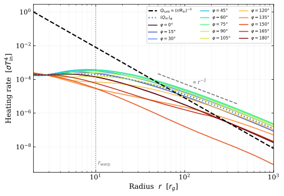
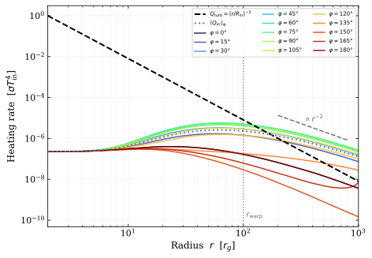
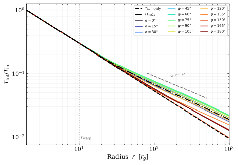
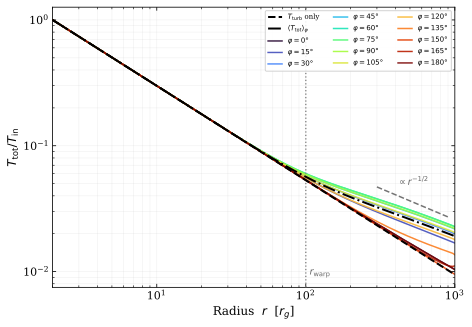
图注：上排为辐照加热率，单位为σT_in⁴；下排为温度除以T_in，横轴为半径。左右列翘曲半径分别为10和100个引力半径，两盘远端倾角均为50°；彩线为不同方位角，黑虚线为只有局域湍流加热的平盘，黑点线和点划线给方位平均。部分方位的外盘加热趋近r⁻²，温度趋近r⁻¹ᐟ²；非单调结构来自遮影。
怎么看这张图：依原文顺序看四个面板：先比较加热，再比较温度。外盘某些方位比平盘热，意味着更多较大面积的低温辐射参与光学输出，因此整体颜色仍可能更红；不要把局部升温与整体谱变蓝直接等同。不同方位的分离也是一维温度模型丢失的信息。 支持本篇核心证据及其适用边界。
来源与置信度：arXiv HTML；source verified；https://arxiv.org/html/2609.29787v1/heating_rates_vs_r_rw10_th50.svg；https://arxiv.org/html/2609.29787v1/heating_rates_vs_r_rw100_th50.svg；https://arxiv.org/html/2609.29787v1/T_profile_vs_r_rw10_th50.svg；https://arxiv.org/html/2609.29787v1/T_profile_vs_r_rw100_th50.svg
图13：内盘耀发后的光学与紫外回声
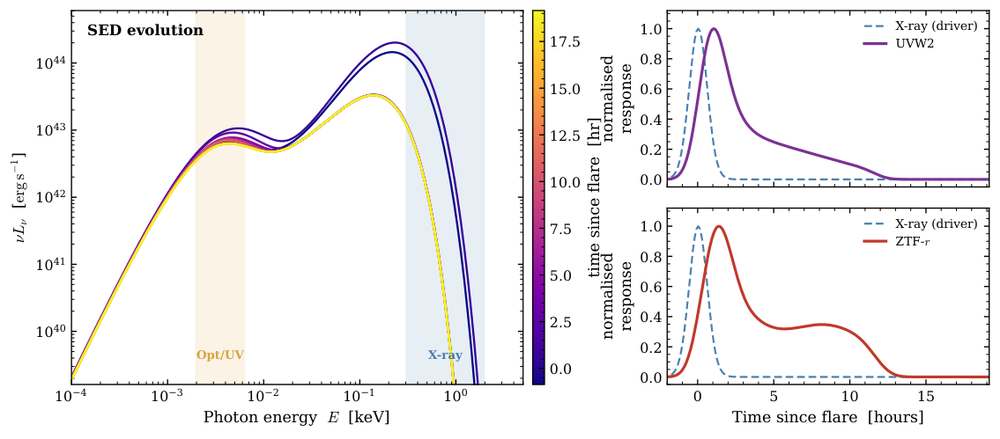
图注：左为能谱演化，右为光学和紫外光变。模型取黑洞质量10⁷太阳质量、内缘2个引力半径、外缘500个引力半径、翘曲半径40个引力半径、远端倾角50°、视线极角70°及方位角0°，基准内缘温度2.5×10⁵ K。局域高斯扰动振幅3×10⁴⁴ erg/s，径向宽6个引力半径，时间宽50 \(r_g/c\)；约10倍X射线耀发产生约2倍光学/紫外响应，r波段双峰来自盘近侧和远侧。
怎么看这张图：这是指定几何下的前向计算，并非对某个TDE数据的最佳拟合。先确定X射线驱动时刻，再看光学回声延迟和近远侧双峰；更换视角或翘曲半径会改变形状，小时量级采样不足时双峰也可能完全被抹平。 支持本篇核心证据及其适用边界。
来源与置信度：arXiv HTML；source verified；https://arxiv.org/html/2609.29787v1/reverb_figA.png
强相关工作
Bardeen与Petterson1975年的盘对齐机制、Scheuer–Feiler的稳态倾斜盘解是本文几何参数化的直接基础。本文新增的是把这种倾斜与扭转结构连接到TDE的辐照、遮挡和回声，而没有从头解决非线性磁流体输运；原理论的适用条件也随模型一起继承。
TDE文献中已有延迟X射线、紫外平台及高振幅多波段变化，本文把AT2019dsg、AT2022dsb与AT2018fyk列为可检验案例。它们提供动机而非统一拟合样本。后续阅读可沿“warped TDE disk”“delayed X-ray unveiling”“UV reverberation”检索，并同盘风再处理和延迟圆化解释比较，寻找能被同时数据排除的差异。
同一事件 / 同类源线索：
相似工作：
（未提供）
基础理论 / 方法工作：
相反观点 / 张力线索：
（未提供）
3. Monte Carlo sampling of first-order QED processes in laser and pulsar plasmas
- 来源：arXiv / astro-ph.HE
- 链接：https://arxiv.org/abs/2609.29325
- 作者：Verneri Sarjomaa, Joonas Nättilä
- 公告 / 来源日期：2026-09-25
- 阅读层级：重点精读
- 评分：novelty 8/10，importance 8/10，relevance 9/10，final 9.35/10
- 推荐理由：QED事件抽样用可解析逆累积分布替代表格并控制百分之一误差，对辐射PIC有直接可复用价值。
中文题目：用可解析反演的概率分布抽样强场QED过程：精度已有验证，整体加速仍待实测
做了什么：强场中电子发射高能光子、光子转化为电子—正电子对的概率包含特殊函数，逐事件数值积分和求逆会拖慢大规模模拟。作者从常交叉电磁场中的量子电动力学率出发，把总率与出射能量累计分布分别近似：总率用满足渐近行为的函数，累计分布用可反解为至多四次方程的有理函数。这样可以用均匀随机数直接抽样出射粒子的能量分配，减少逐次积分或查表需求。
文中给出多个量子参数范围的近似误差，并用每种过程9万次事件的抽样直方图同精确谱比较，主体概率区表现良好。但这些谱测试使用数值精确总率，尚未把近似总率与抽样误差一起放入完整粒子网格级联模拟；也没有报告端到端运行时间提升。因此应把成果理解为经过单过程精度检验的计算部件，而非已经证明整套强场模拟快了某个倍数。
为什么重要：强场辐射反作用的随机性会影响电子能量展宽、硬光子尾部和成对级联，不能总用连续平均能损代替。本文针对的是随机过程实现中的高频计算步骤，既保留量子分配谱，又尝试降低数值求逆成本。贡献在于可解析近似与误差图，实际效率收益和长时间级联偏差仍需要具体代码验证。
理论 / 观测 / 仪器方法价值：可复用的是把“是否发生事件”与“发生后怎样分配能量”分开近似、分开验证的设计。移植到强场粒子模拟时，应检查总率、累计分布单调性、反演物理解以及能量守恒，再测运行时间与级联产额。对LACT的普通空气簇射模拟不能直接替换相关物理表，因为这里的常交叉外场过程与通常的介质作用条件不同。
为什么应该关注：本文与脉冲星、磁星等强场天体的粒子辐射计算存在方法联系，尤其是高能尾部和电子—光子相互转化。但常交叉场近似、超相对论运动及未偏振处理都有范围；磁星纯磁场中的离散能级、偏振和其他过程不能自动被这两个率覆盖。值得关注的是把该抽样核嵌入适用模型后，能否在相同科学误差下实际省算力。
展开详细解读：文章讲解、背景、理论、重点章节、图表与相关工作
文章详细讲解
科学问题。 模拟中每个粒子在每个时间步都要决定是否辐射或转化，并在事件发生时抽取能量。精确率含Airy或修正Bessel函数以及积分，其累计分布通常没有简单反函数。事件规模很大时，这些重复计算可能成为瓶颈，同时粗糙插值又会污染稀有高能尾部。
作者怎么做。 先以包含外场的Volkov态推得非线性Compton型同步辐射和Breit–Wheeler成对产生率，按初态自旋平均并对末态求和。随后对总率辅助函数与归一化累计分布分别构造近似，兼顾小、大量子参数的极限，并选择可用低阶多项式求根反演的有理结构。
关键结果。 Breit–Wheeler总率近似在所拟合0.5—5000范围的最大相对误差约2.3×10⁻³，在χ≥1处更小；同步总率在10⁻³—100区间误差小于约0.7%。抽样谱对四种入射χ分别比较，主体部分约百分量级符合；低计数尾部的相对起伏更大。这些范围不能无限外推。
局限和下一步。 解析式不等于处处数值稳定。接近累计概率1时反函数变陡，四次根式会受到舍入和分支选择影响，作者采用端点截断。下一步应量化截断对极端粒子及级联代数的影响，联合替换总率与能谱，并与查表实现做同精度、同硬件的性能测试。
关键结果是怎么做出来的
首先建立统一的无量纲量子参数χ，它衡量粒子所感受的场强相对于量子临界尺度。把率写成χ的函数可以同时组织低χ经典极限和高χ量子区，避免直接在多个有量纲变量上拟合一个难以检查的黑箱。
其次把微分率积分成总率，得到每单位时间的事件概率；将微分率除以总率又得到条件能量分配密度。两者作用不同：总率错会改变事件数量，条件谱错会改变每次事件的能量，二者即使单独误差小也可能在级联中累积。
第三步针对不同区间建立平滑近似，并用精确数值积分作为参照。总率误差需要在拟合区外也检查，但作者提供的外推范围有限；例如同步率扩展到χ约10⁴时误差约1.6%，不能继续假设与原区间相同。
第四步反演累计概率。均匀随机数经过近似反函数变成能量分数，四次方程可能产生多个代数根，只有满足物理区间和累计概率一致性的根才可用。端点截断防止病态根，但也改变了极少量概率质量，实际应用不能完全忽略。
最后用9万次事件直方图检验两种过程。同步光子谱与成对电子谱分别比较精确密度；成对谱的另一半还使用电子—正电子交换对称性恢复。这验证了所选条件抽样的基本行为，没有替代时间步、场变化和反馈共同作用下的整体测试。
展开背景、理论、公式、模型和章节导读
背景知识
经典同步辐射常把能量损失处理为连续阻尼；当单个光子可带走电子相当比例的能量时，事件的离散性和反冲变得重要。相同初始电子经过相同场后可能拥有不同能量，这种随机展宽影响后续产生最硬光子的概率。
强场Breit–Wheeler过程是光子在外场协助下产生电子—正电子对，外场提供满足过程所需的动量交换。它与普通两个实光子的相互碰撞不是同一数值输入，也不能把这里的率直接套到所有天体辐射场。
常交叉场具有互相垂直、适当单位下等强的电场和磁场，场不变量为零。局域常场近似要求辐射形成尺度上外场变化足够小，因此真实场若有快速梯度或粒子运动不满足近似条件，就需要更完整的过程描述。
粒子网格模拟常同时跟踪粒子运动、场和辐射事件。单个抽样核更简单可能节省计算，但实际程序还花时间在推粒子、网格通信与负载分配；只有整体测速才能知道哪一步是瓶颈。论文的解析结果提供可用候选，不能仅凭公式长度推算速度倍数。
基础理论 / 方法脉络
率描述单位时间内发生事件的可能性，而概率必须在有限时间上积分。事件时刻可通过累计光深决定：为每个粒子抽一个指数分布阈值，沿轨道不断累加率，达到阈值时触发。这样自然处理沿轨迹变化的场强，但步长仍应足够解析变化。
给定事件发生，条件谱归一化后形成从0到1的累计分布。反变换抽样的核心是把一个均匀随机数映射回能量分数；误差应同时检查累计函数和微分密度，因为一个很平滑的累计近似不一定保证尾部相对误差很小。
有理函数是两个多项式的比值，能够比单个多项式更容易表达端点和渐近行为。选择低阶结构还使反演变成低阶代数方程，但分母不能在物理区间有极点，累计函数必须单调，反函数也必须选到正确分支。
能量守恒是抽样后的独立检查。对超相对论、近共线近似，量子参数按能量分配，并由母粒子减去已分配部分得到另一粒子。若数值误差使能量分数越界，不能仅靠事后裁剪而不记录偏差；端点处理的频率及能量影响都应被量化。
公式与推导
以下以电子同步发射为例，其他过程采用相同概率链。先用纯横向磁场、超相对论极限给χ的直观标度：
这只是χ的物理解释，不是把全文常交叉场率普遍改成磁星率；一般情形应使用场张量与四动量定义的不变量。
第二步将精确微分率w积分为总率：
Γ以s⁻¹计，ε是入射能量，T无量纲。两种过程有不同的T，不能因结构相同就共用数值系数。
第三步从无事件生存概率得到触发条件：
U₁在0到1均匀分布，τ无量纲。沿轨迹累计到随机阈值触发，比把一次平均能损强加给所有粒子更能保留随机性。
第四步归一化条件累计概率：
正确函数满足F(0)=0、F(χ)=1且单调。总率归一化不正确会连带破坏条件谱，因此两种近似需要一致性检查。
第五步写成能量分数r的可反演有理近似，以下是概念形式而非文中全部系数表：
U₂是另一独立随机数，r=χ₁/χ。求根后须检查0≤r≤1、分母不为零及回代概率；并非任意四次根都物理可行。
第六步分配能量并更新母粒子：
成对过程把光子χ按r与1−r分给两种粒子；最后的能量关系属于超相对论近似，而非所有运动学条件下的恒等式。
第七步解释端点的数值困难：
当尾部密度很小时，微小概率误差放大成分配误差。发散的是反函数斜率的可能行为，不是物理出射能量可以无限大。
最后区分总率误差和谱误差的组合：
这是小误差的一阶关系。实际级联反馈更复杂，需用联合事件模拟验证，不能仅从两张单过程直方图保证长期结果。
模型拟合 / 应用方法
这里拟合的是已知理论函数，不是天文观测参数。精确数值积分提供目标，低χ和高χ渐近式约束近似函数的形状，再在有限范围优化系数。复用时应连同适用χ区间保存，避免只复制函数而丢掉误差说明。
总率和累计分布要分开检查。作者对Breit–Wheeler与同步率给出不同精度范围；累计分布的反演测试则关注产物谱。主体区误差小不代表极端尾部相对误差小，也不代表在极低概率成对区有相同绝对事件统计。
端点处理对同步抽样采用约5×10⁻⁴的概率截断、成对约10⁻⁴。实现时需核对其具体概率定义，测被改变的事件比例与携带能量，而不是把它当完全无损的浮点修补。图13的半谱对称化也应在代码与验证说明中公开。
完整应用验证至少应对照精确或高精度查表基准，测事件数、平均能损、高能尾部和对产生倍增随时间的变化；这些是建议的后续验证，非作者已经完成。性能比较还需包括四次求根的实际代价、向量化和通信成本，本文未提供可直接引用的整体加速倍数。
重点章节 / 结果段落怎么读
先读II的χ定义和两种过程率，分清常交叉外场、未偏振及超相对论条件；微分率、总率和辐射功率不能混为一量。
III.1—III.3连接光深触发、近似误差与可解析反演，后续分区公式是实现细节。应先理解概率链再复制系数。
IV的图12/13检查产物分布，V讨论适用范围。特别核对这里使用精确总率的验证口径，以及尚未报告端到端级联与运行时间测量的限制。
关键图表与解读
图12：量子同步辐射的抽样谱
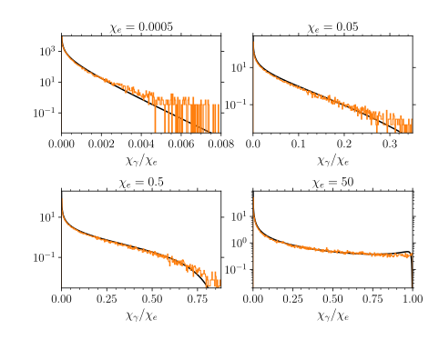
图注：四个面板对应四种入射电子量子参数χ_e。橙色归一化直方图为9×10⁴次事件按文中解析反演式抽得的光子χ_γ分布，黑实线为精确微分率预测的概率密度。
怎么看这张图：看直方图在主体概率区是否跟随黑线，再看稀有尾部的计数噪声。该检验验证出射能量的条件分布，作者此处使用数值精确总率，因此不能把图中符合程度当成近似总率与级联动力学全部验证通过。 支持本篇核心证据及其适用边界。
来源与置信度：arXiv HTML；source verified；https://arxiv.org/html/2609.29325v1/SynchProducedSpectrajulkaisu.svg
图13：Breit–Wheeler成对产生的抽样谱
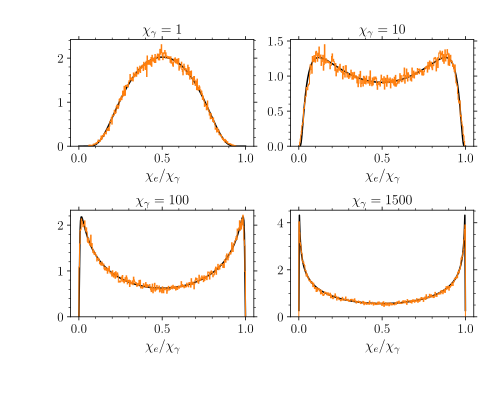
图注：四个面板对应四种入射光子量子参数χ_γ。橙色直方图为9×10⁴次事件得到的电子χ_e分布，黑线为精确微分率密度；能量分配变量ζ小于0.5的部分由对称化得到。
怎么看这张图：电子和正电子交换要求分配谱对称，这是本图重要的结构检查。尾部相对误差大时仍需同时看绝对概率。本文没有给完整粒子网格模拟的测速或级联累积误差，若移植应把这些另作独立验证。 支持本篇核心证据及其适用边界。
来源与置信度：arXiv HTML；source verified；https://arxiv.org/html/2609.29325v1/BWProducedSpectrajulkaisu.svg
强相关工作
Ritus的外场QED理论和Erber关于强磁场高能转换的综述构成物理率的基础，Duclous等2011及Ridgers等2014工作将随机辐射与成对过程用于高强激光—等离子体计算。本文没有发现新的辐射过程，创新在于对已有过程率及累计分布给出便于计算的近似与反演。
与传统查表或数值反演相比，解析表达减少表格依赖且便于观察渐近行为，但稳定性、缓存效率和并行实现不同，哪种更快需实测。迁移到天体强场模拟前，应先检查局域场近似和偏振需求，再讨论计算优化；物理模型不适用时，数值近似再精确也不能产生可靠结论。
同一事件 / 同类源线索：
相似工作：
（未提供）
基础理论 / 方法工作：
相反观点 / 张力线索：
（未提供）
4. Probing the Metallicity Dependence of Fast Radio Burst Progenitors with CHIME/FRB Outrigger Dwarf Host Galaxies
- 来源：arXiv / astro-ph.HE
- 链接：https://arxiv.org/abs/2609.28629
- 作者：Y. Dong, W. Fong, K. Nimmo, N. Loudas, B.C. Andersen, S. Andrew, A. Cai, S. Chatterjee
- 公告 / 来源日期：2026-09-25
- 阅读层级：重点精读
- 评分：novelty 8/10，importance 8/10，relevance 8/10，final 9.00/10
- 推荐理由：CHIME定位矮星系宿主并比较重复/非重复FRB金属丰度，直接触及形成通道；必须核查小样本和选择效应。
中文题目：FRB矮宿主中的金属丰度线索：重复源偏好低金属环境，但样本与选择仍关键
做了什么：作者从CHIME/FRB Outriggers精确定位样本出发，结合深成像、宿主关联、恒星质量拟合和光谱，检验快速射电暴的形成是否依赖环境金属丰度。光度先筛出8个矮宿主候选，质量建模后只有5个满足恒星质量不超过约10⁹·¹太阳质量的定义，说明“看起来暗”不能直接等同于“质量小”。在z≤0.2的57源母样本中，这5例给出约9%的已确认矮宿主比例，是随访不完备下的下限。
同文献样本统一比较后，重复FRB的矮宿主更集中于低金属区：6个中有5个氧丰度低于12+\(log(O/H)=8.35\)，部分同时有持续射电源。这个现象支持形成环境可能有差异，但非重复源可能以后才显示重复，射电与光学选择也不同；目前不能由小样本认定唯一前身通道、硬性金属阈值或特定的金属依赖函数。
为什么重要：此前一些宿主样本提示FRB偏向较大、较富金属的恒星形成星系，容易使低质量环境被视为罕见例外。新的精确定位增加了可靠矮宿主，并将重复与非重复源分开比较，表明一个总体宿主分布可能掩盖不同子群。贡献是更好的环境证据和选择效应问题，而不是已经把所有FRB分成两种确定机制。
理论 / 观测 / 仪器方法价值：可借鉴的是从定位到宿主、从光度到质量、从线比到统一金属丰度标尺的完整链条，以及对上限采用删失统计。比较瞬变前身时，应同时控制恒星质量、红移、恒星形成率和可探测性，而不是看到两个均值不同就直接归因于金属。本文的模拟星系背景提供了可检查假设的方式，但其权重选择仍是模型输入。
为什么应该关注：FRB持续射电源、磁星形成和年轻超新星环境与高能天体物理相连。低金属环境可能影响恒星失质量、角动量和致密残骸，但本文测的是宿主尺度性质，不是爆发局部星云的化学或磁场。下一步应同时关注重复活动搜索、持续源深上限及局部环境光谱，避免由宿主金属丰度直接推断中微子或伽马产额。
展开详细解读：文章讲解、背景、理论、重点章节、图表与相关工作
文章详细讲解
科学问题。 FRB前身是否偏好某类星系环境，能帮助区分年轻大质量恒星相关通道与较长延迟通道。但矮星系较暗，过去定位与随访容易漏掉；重复源又可能因多次爆发更容易精确定位，因此比较之前必须先梳理样本如何进入研究。
作者怎么做。 CHIME远端站定位将误差缩到亚角秒量级，作者对2025年部分高精度定位事件做深成像，使用PATH宿主关联概率，并对候选星系进行光谱与Prospector恒星种群建模。低光度候选随后以恒星质量重新分类，金属丰度尽量放在统一的发射线标定上。
关键结果。 新的非重复FRB矮宿主大体位于普通恒星形成星系的质量—金属丰度序列，重复源矮宿主则更偏向金属较低一侧。重复与非重复分布的删失样本比较给出约0.001的log-rank概率，但这不能替代对发现与随访选择的完整校正。样本还显示低金属重复源中持续射电源的存在值得继续研究。
局限和下一步。 观测到的重复状态依赖监测时间、频段和灵敏度；CHIME的400—800 MHz选择对强散射源也不均匀。星系整体氧丰度不等于FRB位置的局部值，多种发射线标尺可带来明显系统偏移。未来需要同一选择函数下更大定位样本，特别补齐暗宿主和未测金属丰度对象。
关键结果是怎么做出来的
先看母样本和定位门槛。78个远端站事件提供候选，精定位、宿主概率和实际光学随访逐步缩小样本。深成像中的可靠关联、光度矮候选和最终质量矮宿主不是同一组计数；本文新增结果的可信度来自这几步逐项核验，而不是直接使用射电目录中的最近星系。
接着做质量建模。光度反映恒星发光，但质量光度比受年龄、恒星形成史和尘埃影响。8个光度候选中3个没有通过质量定义，最终5个的分母应回到相应低红移母样本。5/57约9%及其抽样区间只能描述已确认比例；随访不完备使它仍是下限。
第三步统一金属测量。作者用[O III]/Hβ与[N II]/Hα构成O3N2指标，采用一致的标定，并对缺线和上限分别处理。光谱线通量蒙特卡洛传播统计误差，但经验标定本身和空间平均仍带系统限制。图5同时展示被拒绝的光度矮候选，防止读者误把所有星号都视为同一质量类。
第四步构造可比较背景。GALFRB提供星系质量、形成率和红移分布，金属丰度再通过基本金属关系赋值；设r=24的光度切模拟暗宿主偏差。无权重、恒星形成权重以及额外金属权重会改变预期低金属比例，因此二项概率必须连同背景模型读。
最后检查哪些相关尚不足以变成物理定律。持续射电源与低金属宿主的共同出现只是少数对象的线索，宿主色散量、旋转量或散射量的相关性还受多重检验和源环境差异影响。论文没有证明每个重复源必有持续源，也没有建立无例外的金属截断。
展开背景、理论、公式、模型和章节导读
背景知识
快速射电暴是持续毫秒量级的明亮射电脉冲，精确定位才让我们把其辐射性质与宿主联系。重复源指已观测到多次爆发，非重复源更准确地说是目前只观测到一次；它们不是不受观测条件影响的终极物理分类。
矮星系常具有较低金属丰度，但质量和金属不是一一对应。恒星形成率、气体流入和历史富集也影响氧丰度，因此“FRB偏好小星系”与“FRB偏好低金属”需要用条件比较区分。质量—金属图能帮助发现偏离同质量普通星系的对象。
发射线金属丰度是经验或模型标定量，常用12+log(O/H)表示氧氢数目比。不同标定基于不同电子温度、离子参数或样本，数值可能系统偏移；把来自各篇文献的数值直接堆在一张图上，容易造出假分群。
持续射电源是伴随FRB位置的稳定或缓变射电辐射，可能涉及致密残骸周围星云或其他环境。它与宿主恒星形成射电也需区分。测到低金属与持续源同时存在，为前身模型提供约束，但不是直接测到发动机年龄、磁场或形成机制。
基础理论 / 方法脉络
宿主关联应同时使用定位误差、位置偏移与背景星系密度。高后验关联概率表示在给定先验下某候选更合理；若允许有未探测宿主，其先验也会影响结果。亚角秒定位显著降低偶合，却不能使所有暗宿主问题消失。
恒星种群拟合从不同波段的光度和光谱推形成史、质量与尘埃。年轻少量恒星可以贡献很多光，所以一个亮度较小的星系仍可能有较高的老恒星质量；这正是本文光度选样后必须做质量复核的物理原因。
线比金属指标把几条发射线的相对强度映射为氧丰度，依赖气体激发条件和标定范围。相近波长的线比减少部分尘埃误差，但跨线比组合仍需统一处理。上限表示信息不完整，应进入删失统计，而不是当作该点精确等于上限。
统计检验要明确零假设。若背景按全部场星系抽样，结果同按恒星形成率抽样不同；若再加金属依赖，问题又变为哪类权重能产生观测子集。小概率拒绝某个背景，不会自动证明一个唯一前身模型，也不能从“未拒绝”推出该权重已经被证实。
公式与推导
先用一般贝叶斯关联形式说明定位为何重要：
H_i为第i个宿主假设，分母应含未探测宿主等允许情形。这里是方法背景，PATH还使用具体的星系与偏移先验。
其次连接光度与恒星质量：
质量光度比依赖种群参数θ，包括形成史与尘埃；并非固定常数。这说明8个光度矮候选为何需重新判断是否达到质量门槛。
第三步写出本文使用的O3N2线比：
F为经一致处理的线通量，同一比值的单位相消。弱Hβ或[N II]会使误差非高斯或只有界限，不能硬算精确丰度。
第四步给出所采用Curti标定的一种表示：
需在约7.6—8.85的氧丰度范围内选取对应物理解。形式线通量误差之外还应保留标定系统误差，避免将反解小误差等同于绝对丰度精度。
第五步定义有权重背景的低金属比例：
p_g是模拟星系分布，区域包含质量和光度选择。改变权重或暗宿主选择会改变零假设，必须与观测样本定义一致。
第六步用二项分布检验至少k个低金属对象：
重复源子集为N=6、k=5，全矮宿主为N=13，二者不是相同检验。背景p的不确定性及多次比较也不能从式中自动消失。
最后用选择加权说明观测与真实分布区别：
这是教学概括，真实选择依赖多维变量。不能从观测到的金属分布直接消去两个S；完整人口学推断需联合建模它们。
模型拟合 / 应用方法
作者采用非参数恒星形成史和连续性先验，通过Prospector拟合光度及可用光谱。质量边界附近的对象应看后验范围，而非只比较单个最佳质量；本次将光度矮候选重新分类，是实际选样链中的必要修正。
线通量通过约1000次扰动传播统计误差，再按统一氧丰度标尺比较。缺Hβ等情形使用可用的替代指标或上限，不能假装所有宿主具有完全同质的测量。不同标定可产生明显系统差，因此本研究优先统一口径具有实质意义。
比较分布时采用处理上限的Kaplan–Meier估计及log-rank检验，再用模拟场星系探索权重。正文对恒星形成加权后的多种方案讨论涉及多重比较，结果只足以说某些低金属增强方案更接近重复源子集，不应据此排名唯一正确函数。
对持续射电、DM、RM、散射量的探索必须记住样本大小不同，某些相关只在去除少数持续源后增强，并有多次测试代价。这里不把约百分量级p值包装成确定因果；建议下一步预先规定子样本、测量口径和检验，再扩充盲样本。
重点章节 / 结果段落怎么读
II与III先追踪精定位、成像、关联和光谱，确认母样本与最终矮宿主的不同分母。IV的质量和金属测量说明8候选变为5确认的原因。
V.1—V.3配合图5看相同质量处的宿主差异；V.4配合图6看零假设如何随权重改变，区分重复源子集和13个全部矮宿主。
最后读V.5及VI的环境讨论和选择限制。低金属、持续射电与重复活动可能相关，但宿主整体测量不能直接替代FRB局部物理条件。
关键图表与解读
图5：FRB宿主的质量—金属丰度关系
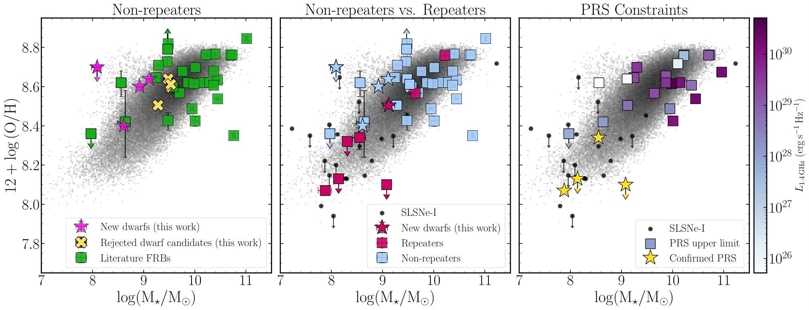
图注：灰色密度背景为z<0.5的DESI DR1场星系。左图仅列非重复FRB：洋红星为新矮宿主，黄叉为被排除的矮星系候选，绿方为文献宿主。中图加入重复源，红蓝方分别为重复与非重复源，黑圆为I型超亮超新星宿主。右图按1.4 GHz持续射电源的亮度或上限着色，黄色星号标已确认持续源；其亮度约为10²⁸—10²⁹ erg s⁻¹ Hz⁻¹量级。
怎么看这张图：先在相近恒星质量处比较金属丰度，避免把质量差当成独立金属效应。重复源在低金属矮宿主中的集中值得关注，但新样本的“8个光度矮候选”最后只有5个满足恒星质量条件；图上黄叉正是这一步不能省略的原因。 支持本篇核心证据及其适用边界。
来源与置信度：arXiv HTML；source verified；https://arxiv.org/html/2609.28629v1/MZ_3panel.png
图6：金属偏好随背景假设而改变
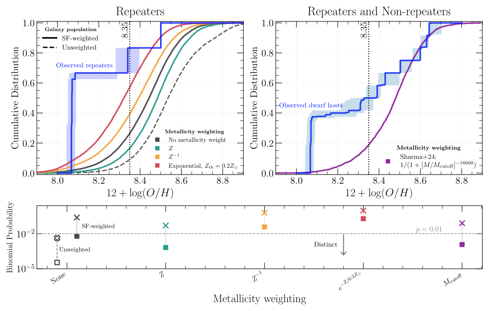
图注：上排为GALFRB模拟星系的氧丰度累计分布：虚线无权重、实线按恒星形成加权，再施加图例给出的金属丰度权重或恒星质量截断。深蓝为观测矮宿主分布的中位数和68%区间，竖点线为12+\(log(O/H)=8.35\)。下排为抽得5个低金属矮宿主的二项概率，方块对应6个重复源宿主，叉号对应全部13个矮宿主；横虚线为无权重检验的p=0.01门槛。
怎么看这张图：先分清重复源子集和全体矮宿主，再比较恒星形成加权前后的背景。正文对多种权重另有多重比较处理，不能拿所有点直接同一横线做发现判断。本文支持环境依赖的线索，尚不能识别唯一金属权重函数或证明存在绝对禁止形成的阈值。 支持本篇核心证据及其适用边界。
来源与置信度：arXiv HTML；source verified；https://arxiv.org/html/2609.28629v1/GALFRB_testing.png
强相关工作
Sharma等2024年Nature研究提出FRB偏好大质量恒星形成宿主，并讨论质量或金属阈值。本文增加矮宿主并区分重复源，提示总体趋势可能掩盖子群；但样本选择和重复分类不相同，当前全部矮宿主样本也未必足以拒绝原质量截断方案，不能简单写成已推翻旧结论。
Curti等的强线金属标定和PATH宿主关联框架是这里两条独立基础链：前者控制环境量的可比性，后者控制源与星系是否确实相关。持续射电源及FRB20220529A的环境文献提供具体物理动机，但本研究的统计联系并未直接测出低金属如何改变发动机自旋或磁场；这些仍是待检验的前身解释。
同一事件 / 同类源线索：
相似工作：
基础理论 / 方法工作：
（未提供）
相反观点 / 张力线索：
（未提供）
5. Dynamically Stable Magnetic Fields in Relativistic Neutron Stars: A Diverse Landscape of GRMHD Equilibria
- 来源：arXiv / astro-ph.HE
- 链接：https://arxiv.org/abs/2609.28651
- 作者：Mai Li, Vasileios Paschalidis, Antonios Tsokaros, Maria Mutz, Koji Uryu
- 公告 / 来源日期：2026-09-25
- 阅读层级：重点精读
- 评分：novelty 8/10，importance 8/10，relevance 8/10，final 9.00/10
- 推荐理由：长时GRMHD检验中子星稳定磁场是否唯一，保留初始条件记忆是有价值的物理结论，需核查数值稳定边界。
中文题目：中子星磁场松弛后并不唯一：相似环向比例之下，仍保留不同多极结构
做了什么：作者从三种自洽的旋转磁化中子星平衡态出发，用三维广义相对论磁流体模拟追踪几十个阿尔芬时间的演化，再以矢量球谐分解量化磁场。不同初态都趋于变化较慢的混合极向—环向结构，部分内部半径上的环向/极向均方根磁场振幅比约0.2—0.4；但其角结构并未变得相同，有的保留偶极主干并发展明显非轴对称分量，有的仍以轴对称高阶模式为主。
因此，径向平均比例的相似不代表所有星都会松弛到同一个“扭转环面”。这是有限模型、有限演化时间内的数值证据，不能说已经证明任意真实中子星的最终稳态。尤其0.2—0.4是磁场振幅比，不是环向磁能占总磁能的20%—40%，而高阶弱模式的精确排序仍对分辨率敏感。
为什么重要：中子星表面热点、磁层结构和爆发模型常依赖对内部磁场的假设。若把一个理想化混合场当成普遍终态，就可能低估初始几何对后续观测的影响。本文把“整体比例相近”与“多极结构不同”定量分开，为使用更丰富的磁场初态提供理由，同时指出当前证据主要支持非唯一性而非某个唯一替代构型。
理论 / 观测 / 仪器方法价值：可复用的是对自洽平衡态做动力学演化，再用整体约束、能量或振幅诊断、球谐模式和有限分辨率对照共同评估结果。对探测器无直接性能结论，但对磁星辐射或粒子加速模型有重要输入意义：总偶极强度相同的星，表面局部场和曲率仍可能不同，需要将几何不确定性传播到辐射预测。
为什么应该关注：磁星及FRB发动机常用简化偶极或扭转磁场描述。本文提醒应先区分远区由低阶模式主导的场与近表面多极结构，后者可能影响局部加速和热点。然而本次模拟没有完整辐射转移、对等离子体或无力磁层，不能从这些图直接推断爆发率、谱形或中微子产额。
展开详细解读：文章讲解、背景、理论、重点章节、图表与相关工作
文章详细讲解
科学问题。 纯极向或纯环向场常有不稳定性，混合场被认为能提供更持久结构；问题在于稳定后的形态是否普遍。若只比较一个整体能量比例，角结构差异会被平均掉，所以作者同时关注径向剖面和不同球谐阶数的贡献。
作者怎么做。 COCAL生成三种轴对称、慢速均匀旋转且混合磁场的自洽初态，再以Einstein Toolkit相关模块演化时空和流体。初始采用Γ=2多方关系，演化采用Γ-law能量方程；这是简化热力学模型，不能直接等同于真实多成分冷中子星。矢量势方案控制磁场散度，之后在围绕质心的球面上分解场。
关键结果。 A在约24个阿尔芬时间、B与C在约20个时刻已有代表性的缓变结构，并有更晚快照比较。A仍以极向偶极为主，但多个非轴对称分量变重要；C原本较强的八极贡献保持优势，B也保留较多初始轴对称层级。三者没有收敛成同一几何，尽管径向振幅比显示有限相似性。
局限和下一步。 只有三种初态和有限分辨率，模型C做了一组较低分辨率对照，高阶弱分量仍可变化约几十个百分点。外部稀薄物质处理并不是完整无力磁层，长期电阻、霍尔漂移、超导与真实成分分层也未被穷尽。后续应扩展初态族和收敛研究，再同磁热演化及观测联系。
关键结果是怎么做出来的
第一步确保初态与时空、流体和磁应力一起满足平衡，而不是在一个无磁星模型上随意叠加任意强场。这样初始调整较少被无关失衡支配。A、B、C的几何差异是实验变量，若它们最终仍不同，就能直接检验普适终态的说法。
第二步跟踪数值质量。作者监测Hamiltonian和动量约束、重子质量、ADM质量及角动量，代表模型的质量漂移小于约0.1%、角动量约2%。这些支持所观察演化不是完全由严重数值失控造成，但不等价于完整收敛证明。
第三步在相同定义下比较径向比例。采用围绕瞬时质心的坐标球面，以初始赤道半径归一；总极向与环向场先由所有保留模式重构，再计算球面均方根。因此图4的比例是完整场的诊断，不是只取图7展示的四个最强模式。
第四步用角模式拆开被平均掩盖的信息。分解保留到ℓ=63，图7仅选径向平均最强的四项展示，其他模式仍可能接近第四项。A的非轴对称谱较丰富，C的主要极向八极与偶极都保留下来，说明场记得一部分初始大尺度结构。
最后比较分辨率和不同诊断。C的主要极向模式较稳健，弱模式和环向排序更敏感；北极点场强又不等于全球均方根排序，因为球谐在极点的取值不同。局部热点模型应使用局部场而非直接用全局排行，这正是两类诊断互补的原因。
展开背景、理论、公式、模型和章节导读
背景知识
极向场位于包含对称轴的子午方向，环向场绕轴环绕。二者是几何分解，不是两类不同基本力；混合结构可以改变不稳定模的增长，但有混合场并不自动保证在所有扰动下永久稳定。
阿尔芬时间是磁扰动穿越星体的典型时间，反映磁张力与物质惯性的竞争。经历几十个阿尔芬时间足以观察某些快速重排，却远短于真实中子星的磁热演化年龄，因此“晚期”只相对于本次模拟，不是天体一生的最终状态。
多极展开用不同角尺度描述磁场：偶极是最低的大尺度分量，高阶模式刻画更细结构。远离星体时高阶通常衰减较快，而近表面可能仍很强。因此由远区自转损失推得的偶极场，未必代表表面每个区域的磁场。
真实中子星包含成分分层、超流或超导、固体壳和温度演化，其稳定机制比简化流体模型丰富。本文的意义是检验在一套受控GRMHD设置下是否出现唯一几何，而不是以简化状态方程替代所有微观物理。
基础理论 / 方法脉络
自洽磁化平衡需要气压、重力、旋转与磁力共同平衡。改变场拓扑同时改变力分布，所以随意把场放在既有球形星上可能先产生人为大调整。使用自洽初态使比较初始几何对后期影响更有意义。
广义相对论中磁场散度约束涉及空间度规行列式。作者分解的是密度化场√γB，而非在弯曲空间直接照搬普通欧氏散度；其后再用度规计算观测者测到的振幅。坐标球面和模态诊断仍依赖坐标选择，不应称作完全规范不变量。
均方根振幅是先平方再平均后开根号，磁能则还涉及体积分、度规与物理能量密度。即使某半径的振幅比固定，整颗星的能量分数也不会只由一个点值决定。由0.2—0.4直接写20%—40%磁能尤其错误。
模式分解的用途是诊断而非制造额外物理。截断阶数、球面插值、径向表示和网格分辨率都会影响弱模式。主要模式的稳健性与重构误差比“总共保留4095个复模式”的数量更重要；更多系数不等于更多可信独立结构。
公式与推导
先用牛顿形式说明平衡的物理图像，实际模拟求解相对论方程：
采用Gaussian单位，各项为力密度。磁几何改变最后一项，所以自洽初态需同时调整流体与引力结构。
第二步定义磁调整时间的直观标度：
这是非相对论教学估计；强磁、相对论流体使用含焓的表达。时间单位由半径除以速度得到，几十t_A并非无限稳定证明。
第三步写相对论空间片上的无散度条件：
γ为空间度规行列式。密度化场使无散度条件化为普通偏导形式，方便检验球谐重构是否保持约束。
第四步展开角结构：
a、b组合对应极向，c对应环向；系数随半径变化。正负m要配对才构成实场，因此图中非负|m|标签不意味着丢掉负m信息。
第五步计算完整分量的球面均方根：
先重构所有保留模式再算总振幅，才能保留它们的组合效果。局部极点诊断与此球面平均不必有相同模式排序。
第六步定义图4的量并说明能量区别：
第二个关系只是在相同空间权重、比例近似均匀时的教学估计；0.2—0.4对应平方约0.04—0.16，而总能量比例还需体积分。
最后写出图7用于各模型内部比较的归一：
分母属于同模型同快照，所以不同面板曲线高低不能直接当绝对磁场强度比较。它突出相对结构与初态记忆，而非测定某颗真实中子星的场值。
模型拟合 / 应用方法
本工作没有天文数据似然，参数是初态和数值设置。应把模型A、B、C视作受控对照，而不是对三颗观测中子星的拟合。自洽平衡、动力学演化和后处理分解分别需要验证，任一阶段错误都可能产生看似物理的模式变化。
演化使用多层网格与有限外部大气。初始外部气压相对磁压较低，但磁化程度并未进入真正无力极限；所以外区结果不能直接解释为完整磁星磁层。温度及热点辐射也未由模型完整输出，本日报不以场图虚构观测谱。
稳态判断依据后期径向比例、几何和约束变化趋缓；还应承认有限时间可能漏掉增长缓慢的不稳定模。延长到更多t_A、加入更广初态和不同扰动是进一步检验普适性的路径，不能从当前三模型结果反推整个初态空间。
分辨率对照说明C主要极向模式保持排序，但弱分量可差约22.7%，环向部分约十个百分点变化。A的丰富高m谱尤其缺乏完整收敛研究，因而可靠表述应优先落在“大尺度几何不同且保留记忆”，避免过度解释每一条高阶细线。
重点章节 / 结果段落怎么读
II.1—II.2先确认自洽初态、Γ-law演化及大气条件，理解模拟包含和省略了哪些物理。
II.3是诊断定义：密度化场、瞬时质心、球面均方根与局部极点不是同一量。读清后再看III.1的比例图，避免振幅与能量混淆。
III.3配合图7与分辨率比较，检查哪些模式保存、哪些重排，最后读IV的非唯一性结论。四个展示模式不是全部磁场，有限t_A也不是永久稳定证明。
关键图表与解读
图4：环向与极向磁场振幅比
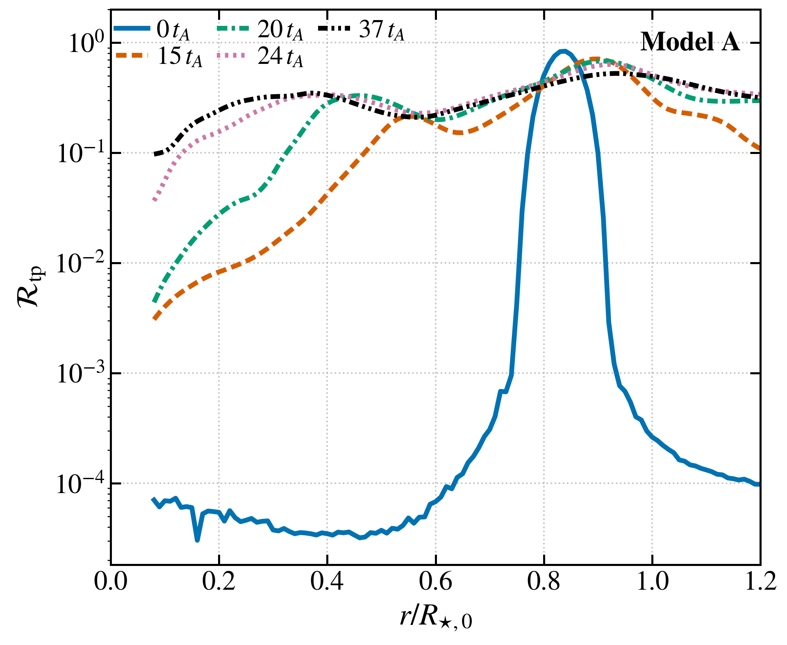
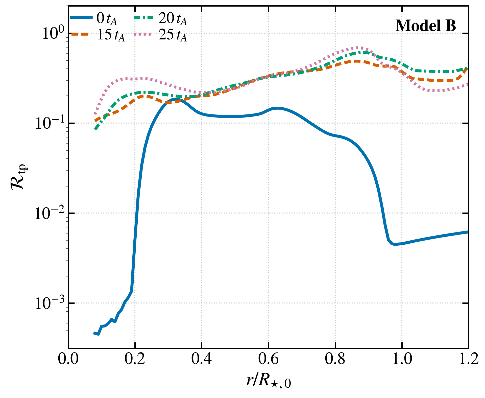
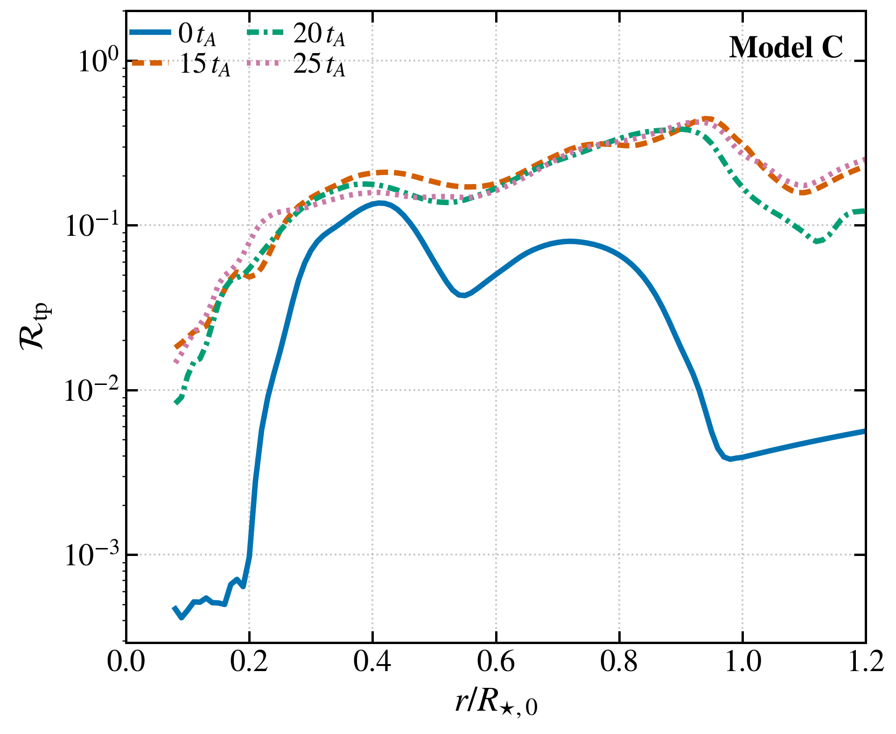
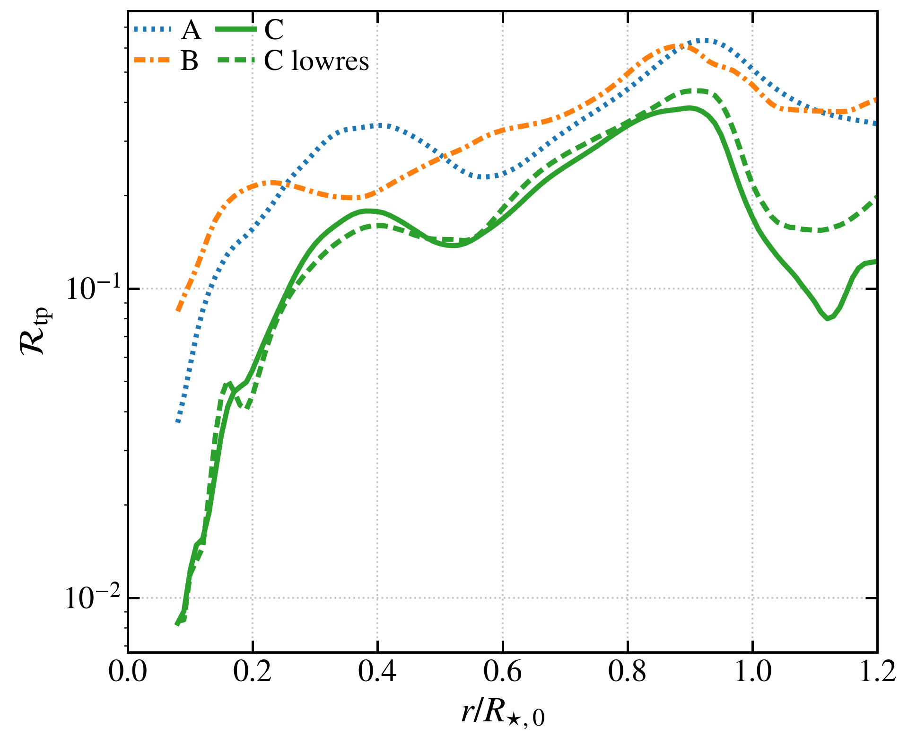
图注：横轴为相对瞬时质心的半径除以初始赤道半径；纵轴为重构全部1≤ℓ≤63模式后的环向/极向磁场均方根振幅比。前三幅分别展示A、B、C模型随阿尔芬时间的演化，第四幅比较A约24 \(t_A\)、B和C约20 \(t_A\)；另列C低分辨率结果。
怎么看这张图：先看每个模型是否在后期停止明显漂移，再比较不同模型在相同半径的比例。0.2—0.4是磁场振幅比，不能写成环向能量占20%—40%。相似径向比例也不意味着相同拓扑，必须继续看多极模式图。 支持本篇核心证据及其适用边界。
来源与置信度：arXiv HTML；source verified；https://arxiv.org/html/2609.28651v1/multi_model_vsh_Lmax63/per_model_evolution/A_Btor_over_Bpol_phys_evolution_with_t37.png；https://arxiv.org/html/2609.28651v1/multi_model_vsh_Lmax63/per_model_evolution/B_Btor_over_Bpol_phys_evolution.png；https://arxiv.org/html/2609.28651v1/multi_model_vsh_Lmax63/per_model_evolution/C_Btor_over_Bpol_phys_evolution.png；https://arxiv.org/html/2609.28651v1/multi_model_vsh_Lmax63/universality/t20_Btor_over_Bpol_phys_by_model.png
图7：相似径向比例下仍有不同多极结构
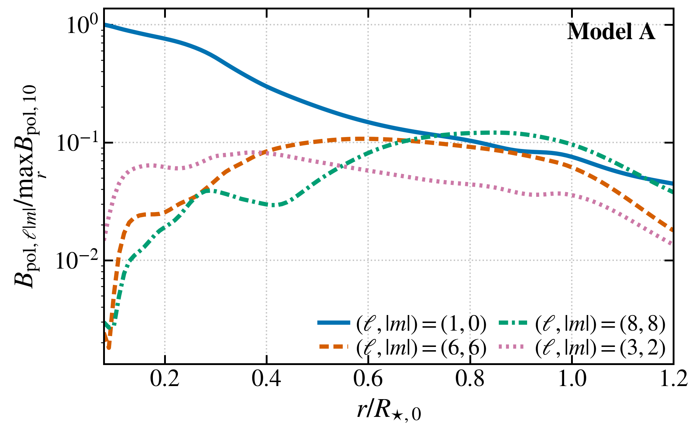
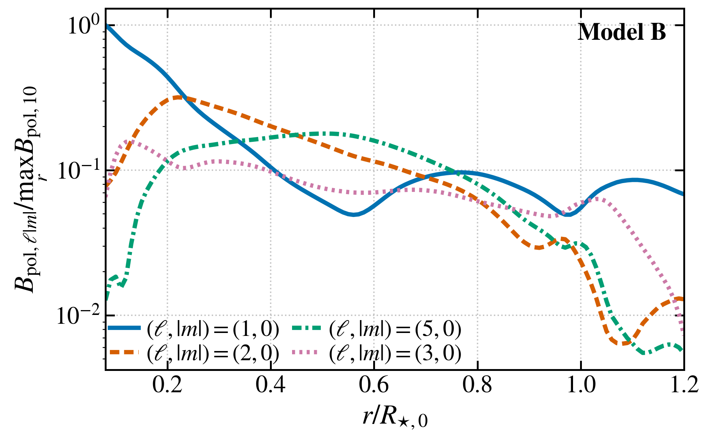
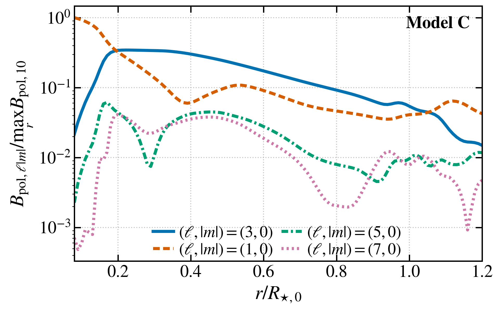
图注：从上到下为A、B、C代表性晚期快照的四个最强极向矢量球谐贡献。A在约24 \(t_A\)，B和C在约20 \(t_A\)；各曲线按同模型同快照的偶极(1,0)径向最大振幅归一，按全径向平均振幅选出显示模式，分解中心为质心。
怎么看这张图：A保留偶极主干却出现明显非轴对称高阶分量，C仍以原有八极分量为主。图只显示四个最强模式，不代表其余为零；弱模式排序对分辨率敏感，本文更可靠的结论是几何不唯一，而非精确预测某颗磁星的各模式振幅。 支持本篇核心证据及其适用边界。
来源与置信度：arXiv HTML；source verified；https://arxiv.org/html/2609.28651v1/multi_model_vsh_Lmax63/mode_diagnostics/A/t25_top4_Bpol_phys_ranked_by_area_over_max_Bpol10.png；https://arxiv.org/html/2609.28651v1/multi_model_vsh_Lmax63/mode_diagnostics/B/t20_top4_Bpol_phys_ranked_by_area_over_max_Bpol10.png；https://arxiv.org/html/2609.28651v1/multi_model_vsh_Lmax63/mode_diagnostics/C/t20_top4_Bpol_phys_ranked_by_area_over_max_Bpol10.png
强相关工作
Tayler以及Markey–Tayler关于纯环向和纯极向场稳定性的研究说明，为何混合磁场是自然讨论对象；Braithwaite和其他恒星磁场模拟进一步推动了长期构型问题。本文并未否定混合场的价值，而是反对把某一种理想化混合几何当成所有初态的必然终点。
Uryū等2014/2019的自洽相对论混合场平衡解，以及Tsokaros等2022的动力学模拟，是本文方法与初态的直接脉络。当前工作增加了较长演化后的多极定量分析，区分径向相似与角结构差异。后续若与磁星热点联系，应再接入磁热、壳层和辐射模型，而不是只凭均方根比例决定可观测量。
同一事件 / 同类源线索：
相似工作：
基础理论 / 方法工作：
相反观点 / 张力线索：
（未提供）
6. Binary-pulsar Timing: A 3D Solar-System Accelerometer and Unknown-Source Probe
- 来源：arXiv / astro-ph.HE
- 链接：https://arxiv.org/abs/2609.29162
- 作者：Zheng-Long Wang, Zi-Qing Xia, Bo Zhang, Yi-Zhong Fan
- 公告 / 来源日期：2026-09-25
- 阅读层级：重点精读
- 评分：novelty 8/10，importance 8/10，relevance 8/10，final 9.00/10
- 推荐理由：26个双星脉冲星重建太阳系三维加速度并给方向质量限制，独立探针及完整双端响应有方法价值。
中文题目：把26个双星脉冲星当三维加速度计：限制太阳系附近未知质量，而非发现新天体
做了什么：双星脉冲星的轨道周期是稳定时钟，其观测变化率同时含有引力波造成的本征衰减、横向运动造成的表观项，以及脉冲星与太阳系之间的相对加速度。作者汇总26个分离、非吸积双星，扣除可计算项和三种银河势模型的预期后，用天空不同方向的剩余信号联合约束额外加速度。没有发现显著额外分量，三种银河基线的联合检验p值约0.2。
研究给出方向依赖的95%上限，并进一步用完整的“太阳系端减脉冲星端”引力响应约束未知准静态点质量。作为示例，10个太阳质量天体的排除距离约为0.39 pc覆盖一半天空、0.21 pc覆盖全天。它限制某类近邻隐藏质量，不代表找到了新黑洞，也没有排除常见第九行星参考族群；远距离质量上限还会从加速度的距离平方标度转入潮汐的距离立方标度。
为什么重要：太阳系额外加速度可以由天体测量或精密计时探测，两者系统误差不同。双星轨道周期避免了孤立脉冲星自转磁制动的不确定性，同时不同天空方向提供三维信息。本文的实质是统一处理样本、距离协方差和银河基线，并将残差转成有方向与覆盖率说明的限制，而不是把一个残差峰当成未知引力源。
理论 / 观测 / 仪器方法价值：可复用的是从计时可观测量构造相对加速度、共同传播距离误差、拟合三维偶极并用完整两端引力核做质量扫描。对其他弱信号研究，这展示了共享系统量如何引起跨对象相关，以及为何应以保守模型包络报告结论。仅比较某一个最佳方向的上限，会夸大整个方法的普遍灵敏度。
为什么应该关注：研究与银河引力场、近邻暗天体和脉冲星精密计时相关。它提供一条无需黑洞吸积发光的搜索路线，与X射线、微透镜和Gaia互补。后续最值得关注的是更精确的距离、更多天空方向的双星和银河非平衡结构建模，而不是把当前无显著信号描述成暗物质或第九行星发现。
展开详细解读：文章讲解、背景、理论、重点章节、图表与相关工作
文章详细讲解
科学问题。 一个未被识别的近邻质量会拉动太阳系，也会拉动远处脉冲星，但两端受到的加速度不同。轨道时钟沿视线测到这种差异，多个方向组合后可检验是否存在共同额外加速度向量。最大困难是本征轨道演化、横向运动和银河引力预期必须先扣清。
作者怎么做。 使用26个非吸积双星的轨道周期导数，扣去广义相对论引力波衰减与Shklovskii项，再同MW2014、Gala2022和McMillan2017三种银河势比较。约一百万次联合蒙特卡洛传播视差、自行和模型误差，并让同一次距离抽样同时进入运动学修正与银河预测，以保留相关性。
关键结果。 拟合的额外三维加速度没有达到显著水平。将加速度除以光速写成等效角速率，方向上限中位数约0.198微角秒/年，全天最保守约0.693微角秒/年。与口径匹配的Gaia基准相比，一些天空方向更紧，但不能将这个比值推广到所有Gaia分析或所有引力源类型。
局限和下一步。 银河非轴对称或非平衡结构可能进入残差，部分计时输入的完整协方差也不可用。点质量模型假设在观测基线内近似静止；靠近某个脉冲星时其端点加速度不能忽略。增加样本与改善银河势比单纯追求一个更小的形式误差同样重要。
关键结果是怎么做出来的
首先构造每颗双星的相对加速度。轨道周期导数不是纯引力探针，必须扣去本征引力波项；自行导致视线方向变化，会产生正的表观周期变化，也要用距离校正。这里使用轨道周期而非自转周期，正是为了避开难以精确预知的磁制动。
其次在共同抽样中传播距离。Shklovskii项随距离变化，而银河场预测也依赖脉冲星三维位置，若分别独立抽样会人为破坏二者协方差。共享银河势参数还能使不同脉冲星残差相关，McMillan模型的协方差因此不是简单对角阵。
第三步将视线残差写成一个三维向量在各方向的投影，广义最小二乘给出估计和协方差。联合三维检验得到p约0.2，单个分量约1.5—1.9σ的偏移不能越过总体检验独立宣称发现。图1显示的是方向灵敏度，不是发现概率地图。
第四步扫描方向并给95%上限，最后取三种银河基线的保守外包络。天空一半、四分之三和全天覆盖对应不同上限；这把阵列式天空几何的盲弱方向公开，而不是仅引用最有利方向。
最后用完整点质量两端响应扫描距离与方向，转换为质量上限。近源以太阳系端响应为主，远源两端大部分共同加速度相消，只剩潮汐差。第九行星和INPOP参照的统计口径也不同，图3的几条曲线不能直接当作置信度完全匹配的竞赛。
展开背景、理论、公式、模型和章节导读
背景知识
脉冲星是高稳定性的旋转致密星，双星轨道又提供另一只时钟。只要能长时间测量到达时间，轨道周期的细小变化就能被约束。稳定不是没有本征演化，紧双星通过引力波损失能量，所以需先预测这部分周期导数。
Shklovskii效应是运动学现象：天体横向运动时，视线距离的二阶变化产生表观远离加速度。即使真实空间速度保持不变，观测周期仍会呈现增长。这个项与自行平方及距离成正比，距离误差因而是关键输入。
银河场会同时加速太阳和脉冲星。计时观测对相对沿视线加速度敏感，而Gaia类星体天球偶极等观测更直接涉及观测者加速度；二者对遥远卫星或局部质量的响应不完全一样，必须匹配物理量后才能比较。
未知质量可能不发光，精密动力学因而与电磁搜索互补。但任何残差都可能含银河势误差、距离偏差或未建模的轨道效应。只有多方向一致性、误差控制及独立方法支持，才适合进一步讨论具体新天体。
基础理论 / 方法脉络
小速度的多普勒关系使相对沿视线加速度表现为周期变化率除以周期。乘上光速便恢复加速度量纲，因此不同轨道周期的双星可以转换到同一个物理单位比较，而不是直接比较原始周期导数。
一个太阳系额外加速度在不同方向投影成偶极模式。样本如果集中在某些方向，垂直方向就较弱；误差大小也不均匀。设计矩阵和协方差共同决定误差椭球，所以方向上限比单个平均灵敏度更完整。
未知远源不是只作用于太阳系。若其距离远大于太阳—脉冲星基线，两端的共同引力近似相消，留下引力梯度。此时加速度差随源距离立方衰减，因而把近源平方反比公式无限延伸会严重高估约束。
统计上要区分额外向量是否显著、某方向的幅度上限及某方向某距离的质量上限。它们使用不同假设和参数空间；天空覆盖率也不是置信概率。95%置信且覆盖75%天空，不表示把两个百分数相乘得到一个统一发现概率。
公式与推导
先从小速度多普勒效应得到教学关系：
n从太阳系指向脉冲星，P_b为轨道周期。右端单位s⁻¹，对应左端的分数变化率。
第二步扣去本征引力波演化与横向运动项：
μ为以弧度/时间计的自行、d为距离；μ²d是加速度。把角秒/年未经换算代入会产生单位错误。
第三步减去银河势模型预测：
同一次距离抽样必须用于两项；共享势参数使不同R之间相关。剩余量还可能包含模型失配，并非天然等于新天体信号。
第四步写额外太阳系加速度向量的线性模型：
负号源于太阳系端被减去；这里假设待检验项可描述为共同观测者加速度。完整未知源扫描随后恢复脉冲星端响应。
第五步求广义最小二乘解与联合检验：
C_a是前式逆信息矩阵。在高斯且三维满秩近似下q与三自由度χ²比较；不能仅挑最大的单分量看显著性。
第六步连接图中角速率口径：
单位为逆时间，可换算成微角秒/年作为加速度的等效角速率。它不是直接测得的脉冲星自行，也不是轨道进动角速度。
第七步写太阳系置于原点、未知质量位于r时的完整响应：
两端加速度相减，单位为长度/时间²。靠近某个脉冲星时第一项可能主导，不能只保留太阳系项。
最后取远场极限，基线为d：
这些是固定方向响应非零时的量级标度，角几何可导致抵消或非单调结构。它解释图3曲线为何不能用一条距离平方直线概括。
模型拟合 / 应用方法
每个双星输入轨道周期及其导数、自行、视差和本征衰减修正，明确同源更新与数据版本。作者使用统一最终样本而非把文献中同一个源的多个解重复当独立测量；完整计时协方差未全部可用，部分标量近似独立传播仍是限制。
三种银河势分别建立残差与协方差。固定势参数的基线较接近对角误差，带共同势参数抽样的模型具有跨源相关。拟合应保留此结构，不能先把误差条加大一点就代替相关性；相关项会改变方向和误差椭球，而不仅是整体尺度。
上限计算在每个方向投影统计量并用蒙特卡洛校准，负幅度估计按物理上界规则处理，再对三种势取保守包络。这给出可解释的全天图，不能把不同势下最有利的方向拼接成更强但不保守的“最佳结果”。
稳健性还包含视差信噪切和逐一删源检查，结果显示主要结论不是由一个极端距离或单源独占。银河卫星的共同加速度部分会抵消，LMC的差分量很小；这只针对本文测量量，不意味着LMC对银河动力学不重要。
转换点质量时假设源在计时期间准静态，并按每个试探位置重新计算两端响应。INPOP潮汐参照按给定质量距离归一，非完全匹配置信度；第九行星金色区域未被本文排除。结果应作为互补限制，而不是宣称超过全部太阳系动力学实验。
重点章节 / 结果段落怎么读
先追踪样本和轨道周期导数构造，特别检查Shklovskii修正与银河预测是否共享距离抽样，理解为何需要26个不同方向。
接着读三维向量拟合和图1，先看联合p约0.2，再读方向上限与天空覆盖率。没有显著向量并不妨碍给出有用限制。
最后读未知点质量响应及图3，在近源和远源极限各核对一次量纲与距离标度；附录的距离切和删源测试用于评估稳健性，不能替代更多银河模型的不确定性。
关键图表与解读
图1：额外加速度的全天方向上限
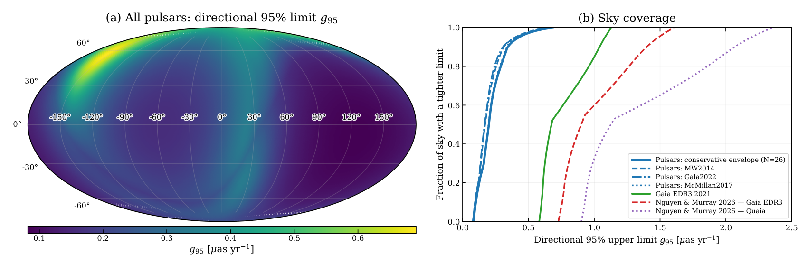
图注：a为26个双星脉冲星给出的方向依赖95%上限g_95，取三种银河势结果的保守外包络，图中坐标表示假设加速度方向。b为达到某上限的天空覆盖比例；蓝色实、虚、点线分别对应Gala2022、MW2014、McMillan2017。绿色为匹配口径的Gaia EDR3基准，红虚线和紫点线为考虑系统误差的近似Gaia及Quaia参照。
怎么看这张图：颜色显示哪个方向约束较弱，不表示那个方向探测到了新引力源。g=a/c以微角秒/年表示等效角速率，不能同脉冲星自行混淆。约束好坏由样本天空几何和误差共同决定，全天保守界应读最弱方向而不是取图上最好一点。 支持本篇核心证据及其适用边界。
来源与置信度：arXiv HTML；source verified；https://arxiv.org/html/2609.29162v1/fig1.png
图3：未知准静态点质量的距离—质量限制
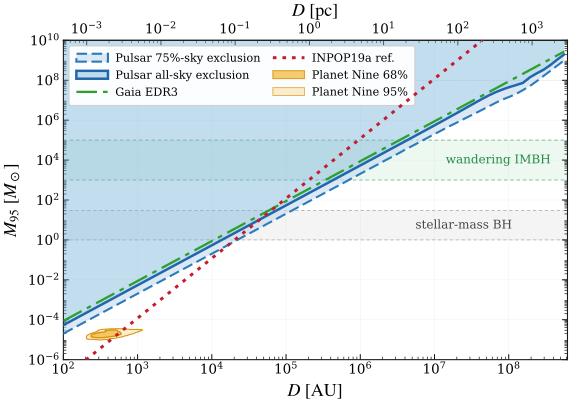
图注：浅蓝与深蓝分别为75%天空和全天覆盖的排除区，虚线与实线为对应95%质量上限。绿线为Gaia EDR3的观测者端加速度基准，红点线为按500 AU处5个地球质量归一的INPOP19a潮汐参照；金色为第九行星参考分布的68%与95%区域，横带标恒星级及中等质量黑洞。
怎么看这张图：先分清天空覆盖率与置信水平，再沿固定距离读取排除质量。远源同时拉动太阳系和脉冲星，响应趋于潮汐形式，故上限不能一直按距离平方外推。红线归一口径与本文95%界不同，而且图并未排除所示第九行星族群。 支持本篇核心证据及其适用边界。
来源与置信度：arXiv HTML；source verified；https://arxiv.org/html/2609.29162v1/fig3.svg
强相关工作
Donlon等关于双星脉冲星加速度与银河结构的研究提供了数据和残差物理背景，McMillan2017银河势则是本文模型包络之一。当前工作把这些信息组织成太阳系额外三维加速度和未知局部质量限制，而没有把银河非平衡结构全部拟合掉；与同一批计时数据的其他分析比较时要注意共享数据。
Gaia EDR3通过天体测量得到太阳系加速度，是系统误差不同的互补探针。本文专门做匹配口径比较，不能把任意Gaia文献的一个数字直接同中位上限相除。太阳系星历对潮汐效应的约束又对应另一响应核，因此共同绘图有助理解覆盖范围，但不是置信定义完全相同的简单排名。
同一事件 / 同类源线索：
相似工作：
基础理论 / 方法工作：
相反观点 / 张力线索：
（未提供）
补充推荐：近期/较早未读论文（非今日论文）
1. LHAASO detection of ultrahigh-energy γ-ray emission towards giant molecular clouds
- 来源：Nature Astronomy
- 链接：https://www.nature.com/articles/s41550-026-02975-7
- 作者：Zhen Cao, F. Aharonian, Y. X. Bai, Y. W. Bao, D. Bastieri, X. J. Bi, Y. J. Bi, W. Bian
- 类型：补充推荐（近期/较早未读，非今日每日论文）
- 公告 / 来源日期：2026-09-24
- 阅读层级：重点精读
- 评分：novelty 9/10，importance 9/10，relevance 10/10，final 10.00/10
- 推荐理由：LHAASO巨分子云超高能伽马观测直接检验宇宙线海，重要原始测量；优先核验背景、云模板及局部加速替代解释。
中文题目：把分子云当作宇宙线探针：LHAASO叠加探测及“膝”的条件约束
做了什么：分子云中大量气体提供了宇宙线碰撞的靶，因而可以通过伽马辐射间接测量地球之外的宇宙线。作者选择五个近邻、偏离银盘的巨分子云，将尘埃图给出的气体分布作为空间模板，分别联合分析WCDA和KM2A数据。公开预印本中，各云单独的检验统计量均未达到25，叠加后WCDA与KM2A的TS分别为30.0和40.1；这是利用共同物理假设累积弱信号，并非五个云各自都被显著探测。
按气体柱密度统一归一的能谱与本地宇宙线产生的强子辐射预期相容，为太阳邻域宇宙线分布提供了独立证据。版本说明：本篇9月24日正式发表于Nature Astronomy；下文详细方法和两张图来自已核验的公开预印本2511.05015v2。正式摘要明确说没有清晰的膝特征，与约0.9 PeV或以上相容，但更低能量仍不能排除。不能把预印本的条件轮廓写成最终版的普适下限。
为什么重要：直接宇宙线仪器只测量地球附近粒子，无法单凭一处能谱判断它是否代表更大空间。云的伽马辐射把“粒子探测”变成了远处气体的照明测量，使TeV至超高能区域也能检验局部宇宙线海。本文的推进是取得五云合并的高能证据并检验谱形；它尚未分辨各云之间的细微差异，也没有确定宇宙线膝的位置或来源。
理论 / 观测 / 仪器方法价值：可复用的方法是气体模板、能量依赖的仪器响应和跨目标联合似然的组合。对LACT或其他阵列，首先应检验云模板与点扩散函数卷积后的可分辨尺度、有效暴露和背景结构，再判断叠加是否增加信息。真正有价值的不是简单把几张显著性图相加，而是让各云信号按同一单位气体辐射率进入计数模型，并检查模板误差是否破坏这一共同假设。
为什么应该关注：这与PeVatron及银河弥散伽马研究直接相关：亮云未必含有一个正在加速粒子的源，也可能只是气体多，受到一般宇宙线海照射。值得跟进的是高能端能否进一步区分普遍宇宙线谱与邻近加速器局部增强，以及低银河纬度背景系统误差如何影响推断。对本地研究，优先保存分云似然和气体误差，而不是只记录一个叠加显著性或“膝下限”。
展开详细解读：文章讲解、背景、理论、重点章节、图表与相关工作
文章详细讲解
科学问题。 宇宙线质子和氦核穿过云气体时，强子碰撞会产生中性π介子并衰变出伽马光子。如果云中没有占主导的局部加速器，而且粒子能够穿透所研究的气体，那么单位气体的辐射率反映的是照射该云的宇宙线谱。研究要问的是这种谱在近邻多个方向是否与地球测量相容，而不是先假定每个云都是PeVatron。
作者怎么做。 预印本使用Hercules、Monoceros、Orion、Perseus和Taurus五云，距离约140—830 pc，并选择较高银河纬度来降低银盘弥散背景的干扰。Planck 353 GHz尘埃光学深度用于建立气体柱密度模板，再按每个仪器的角分辨率处理。WCDA约979天、KM2A约1733天的有效观测跨越不同运行配置，不能仅用一个总观测年数代表所有能段暴露。
关键结果。 单云信号偏弱，因此联合模型要求相同的单位柱密度谱，把各目标的计数似然相乘。这样得到有统计支持的叠加辐射，联合幂律指数约为−2.83±0.08。用本地质子和氦核谱经强子产生核转换后，与测得的约1—100 TeV伽马辐射相容。这说明共同宇宙线海是可行解释，但不等同于证明各云宇宙线密度严格一致。
局限和下一步。 高能伽马是宽能段母粒子的积分响应，不会把宇宙线膝原样投影成一个尖锐折点。膝能量、膝后指数、元素组成、气体标定及背景都能相互补偿。下一步应联合直接宇宙线数据和更多云的分能段似然，同时允许目标间有内禀散布；只有当这些替代解释被控制后，才适合把条件谱形约束提升为更普遍的物理结论。
关键结果是怎么做出来的
第一步是选定“靶”，而非追逐每张图中最亮的像素。尘埃模板给出气体沿视线的分布，云区由柱密度阈值界定，多数采用5×10²¹ cm⁻²，Hercules采用更低阈值。这样的选择让空间假设有外部数据依据，但尘埃到气体的换算、前后景混合仍进入通量系统误差。
第二步是建立可与事件数比较的预测。每个能量区间中的理论强度经过暴露、能量响应和点扩散函数转为天区计数；背景由直接积分方法估计。对扩展云，角响应和模板匹配十分关键：若只按云中心做点源搜索，会把信号摊薄并误估背景。
第三步是联合统计。作者先检查单云，再在共同谱参数下叠加，WCDA与KM2A给出不同但互补的能区信息。空白天空模板没有产生相当的过量，圆盘与尘埃模板的比较也用于检验结果对空间假设的敏感性。这些检查增加可信度，但不能代替对所有背景偏差的定量传播。
第四步是物理解译。先比较幂律通量与本地宇宙线经AAfrag计算的伽马谱，再改变母粒子膝能量和膝后指数。网格中谱形固定、归一化自由，意味着图3主要检验谱形而非绝对宇宙线能量密度。氦膝按质子膝的两倍设置，属于刚度标度假设，并非本次数据独立测出。
最后检查结论承受的误差。大尺度宇宙线各向异性相关的背景处理可带来约20%的通量和约0.07的谱指数系统变化，量级不能同统计误差混为一项。正式摘要比预印本更保守，说明引用具体膝界时必须核对版本、固定参数和置信轮廓，而不是只摘一个数。
展开背景、理论、公式、模型和章节导读
背景知识
宇宙线中的带电粒子沿途被银河磁场偏转，通常不能反向追踪到起源。伽马光子则保留到达方向，因此可以用气体的高能辐射测量粒子在不同位置留下的作用。这种方法探测的是粒子密度与靶物质的乘积，独立气体测量才让二者有可能分离。
分子云之所以适合，是因为氢核柱密度大、轮廓可以由尘埃和分子谱线约束。低能粒子在致密云中是否完全穿透是复杂问题；本文关注的高能段有不同传播尺度，但仍应把“均匀照射”视为需要验证的前提，不能从气体图自动得到宇宙线图。
宇宙线“膝”指能谱随能量上升出现进一步变陡的区段。全粒子膝与质子膝不是同一量，元素成分随能量变化也影响观测。本文由伽马谱推母粒子谱，必须指定质子、氦的相对贡献及膝之间的关系；这些选择决定了下限的适用范围。
旧的GeV分子云测量提供了较低能的参照，但将结论推进到更高能需要大有效面积和长时间曝光。高能光子更少、背景重建也更敏感，因此采用多目标叠加很自然。代价是失去部分目标差异：一个合并结果不能回答哪个云出现局部增强，更不能直接测出每个云的谱折点。
基础理论 / 方法脉络
先区分表面亮度与积分通量。对近似均匀的宇宙线场，某个方向的亮度正比于该视线上的气体柱密度；把整个云角面积积分后，总通量又与云质量除以距离平方近似成正比。这解释了为什么研究按柱密度统一比较，而不是只按总质量或最近距离排序。
母粒子能谱到伽马能谱的映射是积分核。一次质子碰撞可产生多种次级粒子，各光子能量并不固定为母粒子的某个严格比例。“典型母粒子能量高于光子能量”只是直觉，真正拟合需用微分产生截面，尤其是寻找谱弯折时。
计数是基本观测量，通量点已经包含响应和模型假设。背景大的弱信号问题适合直接建立泊松似然，避免先扣背景再把低计数误差强行当高斯。共同归一化只有在各云单位气体辐射率可共享时才有明确物理意义，目标间散布可作为未来扩展。
统计显著性、谱参数误差和模型相容性分别回答不同问题。TS支持有无信号；指数误差描述给定模型附近的参数范围；与本地谱相容说明当前数据不要求替代模型。三者不能互换，尤其“没看到膝”既不证明没有膝，也不能无条件变成严格的最低能量。
公式与推导
以下为连接预印本方法的标准教学链，采用各向同性宇宙线微分数密度，而非微分强度，避免多余的4π因子。第一步把体密度沿视线积分成靶柱密度：
这里n_H以cm⁻³计、s以cm计，故N_H为cm⁻²；氢分子需按氢核数计，不可漏掉每个分子的两个核。
第二步定义每个靶氢核、每单位能量的光子产生率：
n_A是母粒子的微分数密度，v_A是速度，A标元素；q的单位为s⁻¹能量⁻¹。AAfrag提供这种产生核的信息，元素组成改变卷积结果。
第三步，在云内粒子谱近似一致且光子可逃逸时，得到微分强度：
单位是cm⁻² s⁻¹ sr⁻¹能量⁻¹。均匀照射假设使气体模板与谱可分离；若有局部加速器，这种分解就可能失效。
第四步将理论强度正向折叠到仪器计数：
i是云，j、k是空间与重建能量格；响应R含面积、时间和重建概率，积分后的信号与背景b都以事件数计。
第五步从独立计数格构造联合似然：
共享谱参数把五云联系起来，云的柱密度和暴露仍分别保留；若背景存在跨区相关性，需要额外处理，不能仅靠相乘消除。
第六步使用常规似然比检验：
预印本一处排版把TS写成未取对数的似然比；这里明确采用与加和及常规显著性解释一致的定义。把根号TS视作高斯显著性还需边界及自由度条件。
第七步用平滑折断谱说明膝的退化，以下采用正谱指数约定的教学参数化：
E_k为膝能量，s控制平滑程度。高能极限趋于E⁻ᵅ²；改变E_k和α₂都能使卷积后的伽马谱变软，所以不能从一个高能上限唯一反演二者。
最后连接整体气体量与远距离通量：
这只是同谱、光学薄极限的标度，常数含平均每氢核质量和4π。它帮助判断选云效率，但真正计算仍须回到空间模板和完整响应。
模型拟合 / 应用方法
输入应分别保留每个仪器、运行配置、能量与天区格的计数及暴露。论文用空间—能量联合框架处理云模板；实现时还要让模板经过对应点扩散函数，不能用高分辨率尘埃纹理直接同低分辨率伽马图逐像素比较。
第一层拟合用幂律描述单位柱密度通量，关注归一化和指数。WCDA与KM2A覆盖范围不同，分别和联合拟合能暴露跨仪器差异；若一开始强制共用所有标定，就可能将响应偏差错误吸收到谱指数。
第二层使用物理产生核，把质子膝、氦膝和膝后指数转成预测伽马谱。在每个谱形网格点重新优化幅度，得到的是剖面统计量。读轮廓前必须知道哪些成分、平滑度和元素膝关系被固定；若释放这些量，允许区通常会扩大。
背景检验需要明确针对什么失败模式。空白位置测试可发现模板自身偏好噪声的趋势，替代空间模板检查气体结构敏感性，各向异性修正则处理大尺度宇宙线背景。未来若移植至IACT，小视场、接受度梯度和离源区污染应重新测试，不能直接搬用LHAASO的背景精度。
最终结果应分三层发布：可复核的事件与模板证据、给定模型的谱约束、条件性宇宙线解释。本日报未取得最终付费全文，故预印本方法数值保留版本标识；最终摘要的“较低膝仍未排除”优先于旧版本较强的口头表述。
重点章节 / 结果段落怎么读
先读预印本数据与云样本部分，确认五云距离、纬度、两套仪器有效时间和气体阈值，理解为何可以共享单位气体谱而不是共享总通量。
再读三维似然与联合分析，核对单云TS和叠加TS的区别；同时注意TS定义的排版问题，以常规对数似然比理解统计检验。
接着读图2对应的能谱段，将仪器拟合、Fermi参照和强子预期分开。最后读图3的膝参数扫描，并回到正式论文摘要校正结论强度；这里版本差异属于科学解释的一部分。
关键图表与解读
图2：分子云叠加能谱（公开预印本v2）
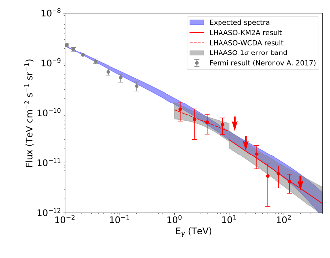
图注：各云微分通量按氢柱密度统一归一到10²² cm⁻²。红实线与红虚线分别为KM2A、WCDA的幂律最佳拟合，灰色带为±1σ统计误差；灰点为按云柱密度和距离换算的Fermi测量。蓝带为采用文中宇宙线谱计算的宇宙线与星际气体相互作用预期伽马通量。
怎么看这张图：先比较跨仪器谱点与蓝色强子预期带，再看高能端误差是否足以区分弯折。柱密度归一化使不同气体量的云可比较，但叠加一致不证明五个云各自宇宙线谱完全相同。本图来自公开预印本，正式论文摘要没有声称清晰探测到膝。 支持本篇核心证据及其适用边界。
来源与置信度：arXiv HTML；source verified；https://arxiv.org/html/2511.05015v2/fermi_wcda_km2a_gmc.svg
图3：膝能量与膝后谱指数的退化（公开预印本v2）
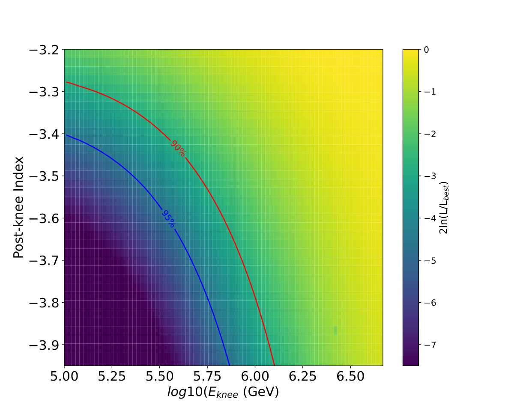
图注：对不同宇宙线膝能量和膝后谱指数，用AAfrag生成伽马谱并拟合KM2A数据所得叠加TS。各网格点固定谱形、放开通量归一化；叠加绘出90%和95%置信轮廓。
怎么看这张图：先固定一条膝后指数横截线再读能量范围，不能把二维轮廓压成无条件的0.9 PeV下限。膝较低但变陡较弱的谱可与膝较高且变陡较强的谱退化。正式摘要容许更低膝能量，本图用于理解方法而不是替代最终版本结论。 支持本篇核心证据及其适用边界。
来源与置信度：arXiv HTML；source verified；https://arxiv.org/html/2511.05015v2/cosmicray_limits-25.png
强相关工作
Fermi-LAT对Orion以及近邻分子云的研究提供了较低能的同类基线，例如Ackermann等2012年的两篇分子云论文。它们与本文共享“以独立气体测量推单位靶物质伽马辐射率”的思路；本次增加的是LHAASO高能范围的叠加信息，而不是首次提出用分子云测宇宙线。跨仪器比较仍需统一气体和距离处理。
AAfrag（Kachelriess等2019）是将母粒子谱映射为次级谱的基础工具，决定膝与伽马弯折之间的宽积分关系。直接宇宙线观测给出本地谱参照，云观测给出空间延伸检验，两者互补而非互相替代。后续检索宜用“molecular cloud cosmic-ray emissivity”“AAfrag knee composition”，并保持元素谱与全粒子谱的区别。
同一事件 / 同类源线索：
相似工作：
基础理论 / 方法工作：
相反观点 / 张力线索：
（未提供）
2. Early metal-enriched baryon cycling before the midpoint of cosmic reionization
- 来源：Nature Astronomy
- 链接：https://www.nature.com/articles/s41550-026-02988-2
- 作者：Yongda Zhu, Zhiyuan Ji, George D. Becker, Jiani Ding, Eiichi Egami, Xiaohui Fan, Xiangyu Jin, Weizhe Liu
- 类型：补充推荐（近期/较早未读，非今日每日论文）
- 公告 / 来源日期：2026-09-24
- 阅读层级：重点精读
- 评分：novelty 8/10，importance 8/10，relevance 8/10，final 9.00/10
- 推荐理由：三个再电离早期星系的金属富集外流光谱将重子循环推至七亿年前后，有清楚新测量；核验谱线识别和速度解释。
中文题目：宇宙早期已有被扰动的富金属气体：JWST在三个红移7—9星系中测到多种吸收线
做了什么：作者使用SPURS计划的JWST/NIRSpec深光谱，在红移9.3105、7.8783和7.2883的三个明亮星系中，直接以恒星连续谱为背景测量金属吸收。先用[O III]发射线建立星系静止参考系，再比较中性氧、低电离硅和碳、高电离硅和碳的吸收速度，发现约50—250 km/s的总体蓝移，以及不同离子在速度范围上的重叠。这说明至少这些明亮星系周围，早已存在富金属、运动受扰且包含不同电离状态的气体。
结论要限定在观测真正支持的层次：蓝移与外流一致，但当前分辨率不能唯一分辨紧凑星际外流、较大尺度周星系气体或复杂内部运动；等效宽度比也不能直接变成精确元素丰度。样本只有三个连续谱信噪足够高的星系，不能据此推断所有早期星系，更不能直接确定再电离来源或时间。
为什么重要：早期星系研究常从发射线得知“已经有金属”，却较难直接看到这些金属所处气体的运动。这里把金属吸收放进有独立发射线参考的速度坐标中，使化学富集与气体重新分布的证据相联系。最可靠的推进是早期重子循环的多个组成环节已同时存在；具体驱动机制、质量流率和反馈效率仍未被唯一测出。
理论 / 观测 / 仪器方法价值：方法上值得借鉴的是先标定系统速度，再做局部连续谱归一、双线联合拟合和真实谱上的注入恢复测试。它将“看见一条凹陷”逐步升级为可审计的运动学证据。对任何中等分辨率吸收线研究，线心、线宽、等效宽度和柱密度应分层解释，特别不要把未分辨饱和线的拟合光深当精确测量。
为什么应该关注：这属于与HE同等对待的重要期刊天文成果，关注点是早期恒星反馈怎样把新合成的元素带入不同气相。它与高能反馈和宇宙物质循环有物理连接，但本文没有测量宇宙线或高能辐射，不能硬套成高能加速证据。后续更高分辨率、多条跃迁和空间信息有望检验离子速度分层是否来自加速流。
展开详细解读：文章讲解、背景、理论、重点章节、图表与相关工作
文章详细讲解
科学问题。 宇宙早期星系已经形成重元素，但这些元素是否仍局限在静止冷气体中，或已被恒星活动重新分布，是理解反馈效率的重要问题。发射线偏重明亮电离气体，吸收线则能沿恒星连续谱前方的视线探测不同电离状态，提供互补几何。
作者怎么做。 在Abell 2744场的SPURS数据中选择静止系1450 Å连续谱信噪比大于10的三个z>7星系，使用三组中分辨率光栅覆盖约1—5微米。用[O III] λ5008定义参考红移，以Hβ作交叉检查，再对O I、Si II、C II、Si IV、C IV进行局部归一和Voigt线型拟合，并回到二维谱检查吸收是否与目标连续谱空间位置重合。
关键结果。 三个对象都出现多离子蓝移吸收，不同电离类别的速度范围重叠；高电离离子的拟合中心有更蓝的倾向，但其精确差异受测量能力限制。等效宽度比显示对象间差异，部分与较低红移星系相似。这支持“早期已有富集且运动复杂的多电离气体”，而不是单一静止、原始化学环境。
局限和下一步。 分辨率约1000，对应数百km/s的仪器宽度；高信噪可使线心比线宽测得更精细，但不能忽视真实噪声。注入测试在保守误差处理下给出约133 km/s的线心散布，说明个别小蓝移或离子排序不宜过度解释。需要更高分辨率和更大、较暗样本检验该图景是否普遍。
关键结果是怎么做出来的
第一步是说明选择函数。样本不是从所有早期星系随机抽取，而是从能测连续谱吸收的明亮对象中选出，紫外绝对星等均亮于约−20.9。选择时不预知金属线特征有助于避免直接挑强线，但仍偏向亮度和信噪，不能消除对星系性质的偏好。
第二步建立速度零点。[O III]是最强稳健星云线；C星系的Hβ与其相差约5 km/s，B星系的Hβ更红约90 km/s，换用它反而增加吸收蓝移，A星系Hβ较弱。A的[O III]虽靠近波段红端，作者检查拟合窗口未被截断，这直接针对边界截断造成线心偏差的可能。
第三步测量吸收。连续谱采用局部线性模型，掩掉线区及明显干扰并迭代剔除异常；双线共享红移和宽度，光深比按振子强度固定。直接数据等效宽度和模型等效宽度都保存，而不是只信模型光深。二维图上的位置一致则帮助排除坏像素和背景残余。
第四步检验误差。作者把模拟吸收注入真实一维谱，3000次恢复得到较小平均偏差和约47 km/s散布；在保守放大流量误差的处理下，散布约133 km/s。表中误差仍是拟合统计误差，注入结果作为稳健性参照，二者不能混为已经完整合并后的误差条。
最后限制物理解译。吸收等效宽度比首先是观测诊断，未分辨饱和、部分覆盖和离子修正会破坏其与丰度的简单比例。文章没有可靠测定总金属质量，也未测出吸收区面积与流出半径；因此不能从几条蓝移线直接计算确定的质量流率或金属外流效率。
展开背景、理论、公式、模型和章节导读
背景知识
天文学中的金属指氦以外的元素，碳、氧、硅来自恒星演化和爆发后的富集。发现早期金属意味着之前已发生核合成，但要知道反馈怎样影响下一代恒星形成，还需要知道气体在哪里、以什么状态运动。
星系连续谱吸收是一种“背光”观测：只看到位于发光背景前方且覆盖部分视线的气体。这种选择有利于看到朝向我们的外流，却并不提供完整三维图。因此蓝移与外流有自然联系，但它不能单独确定流的几何或远离星系的距离。
中性、低电离和高电离离子分别要求不同的电离环境，同时出现通常意味着结构复杂。速度重叠说明它们可能参与共同的总体运动，不保证这些离子在同一个均匀气团里。本文使用“多相”主要是观测性描述，不是已经测得各相温度、密度和体积分数。
再电离时期的星系既制造金属也产生电离光子，但两者不等价。金属吸收证明富集和气体扰动；逃逸的电离光子比例、宇宙平均中性氢演化还需要其他观测。不能把本文的局部气体证据直接升级为再电离预算或时间测量。
基础理论 / 方法脉络
先区分系统红移与吸收红移。系统红移近似描述星系整体，吸收红移含前景气体相对运动；相减并除以宇宙红移伸长因子才得到局部速度。若零点来自受外流影响的线，整个速度序列会一起偏移，故独立星云线交叉检查必要。
等效宽度将连续谱下损失的流量积分成一个波长宽度，不要求真正将内部窄成分分开。这使它比未分辨的光深拟合更稳健，但仍受连续谱选择、积分窗口和混线影响。C II与精细结构线无法完全分开，就是本文明确指出的限制。
谱线变宽有仪器、热运动、湍动、多个未分辨速度成分等贡献。扣除一个近似高斯仪器宽度只适合做数量级检查，不能得到高精度温度。如果热解释给出超过离子可存活温度的上限，更合理的理解是非热或未分辨结构重要，而非真的测到了这种极高温中性气体。
弱线极限中，等效宽度与离子柱密度成正比；饱和后柱密度继续增加而线深变化很小，部分覆盖还会让饱和线看起来不深。把两条不同离子饱和程度不明的线相除，不能恢复精确丰度。本文因此把丰度图与单相光电离计算作为定性参考。
公式与推导
以下沿“波长—速度—吸收强度—物理边界”推导。首先由已知静止波长确定吸收红移，再转局部非相对论速度：
速度负值表示相对星系蓝移，单位可用km/s；50—250 km/s远小于光速，线性近似适用。
第二步定义连续谱归一强度：
分母是局部线性连续谱，a与F同单位，b为单位波长的斜率。线区需要掩膜，否则吸收本身会压低连续谱估计并低估等效宽度。
第三步由归一谱得到静止系等效宽度：
若波长以Å计，W也以Å计。双线积分区在中点分开可避免重复算重叠像素；与模型积分交叉比较能发现轮廓假设影响。
第四步解释仪器分辨率：
R约1000给出约300 km/s的宽度，不意味着线心绝不可能测得更细，但线心精度必须由信噪与注入恢复证实，不能直接由分辨率作乐观推断。
第五步给出高斯近似的宽度分解：
各项以速度平方计；接近仪器极限时两大数相减不稳定。多成分或非高斯线扩散函数会使这一近似变差。
第六步使用标准一维高斯定义写温度上限：
m为离子质量。原文把速度宽度与Doppler b的符号约定写得不够一致，这里明确二者的√2关系；不以该细节做新的精确温度结论。
第七步在光学薄极限换算柱密度：
W与λ均取Å，f是振子强度，双线对各分量求和。存在未分辨饱和与部分覆盖时这里只能作为保守下限，不能同总金属柱密度混同。
最后说明部分覆盖退化的标准关系：
C_f为覆盖率。当τ很大时残余流量主要测C_f而非τ，因此一条“不黑”的线也可能已经饱和；这就是本文避免从线深直接声称精确丰度的原因。
模型拟合 / 应用方法
谱处理使用NIRSpec中分辨率三光栅资料，作者对残余像素噪声将管线流量误差放大1.7倍。吸收拟合前的连续谱、线区掩膜和其他污染区共同决定输入；复现不能只拿发表的Voigt参数而忽略这些选择。
单线拟合红移、高斯宽度、阻尼参数与光深归一，双线进一步共享运动参数和振子强度比。在R约1000下，它们是有效未分辨表示，不是每个真实云团的分量解。拟合下限附近的宽度也不进入温度分析，避免把边界解当实际分辨。
重要的稳健性测试是把人工线加入真实背景，使用同一流程找回，因而保留原生采样与残余结构。约133 km/s的保守散布提醒读者：多个离子、多个星系一致偏蓝的组合比单个约50 km/s偏移更可靠；精确的电离速度排序仍需更好数据。
宿主恒星质量与气体金属丰度另由Prospector光度拟合给出，七年龄段的非参数恒星形成史、尘埃与星云成分都参与。某些形式误差很小，但该框架典型系统误差约0.15 dex；这些光度模型结果不能当成吸收线已直接测得的绝对丰度。
若进一步推质量流率，还需要吸收半径、面积、覆盖率、氢柱密度与电离修正。文章没有把这些全部测出，所以本日报保留到运动受扰和富集存在的层次。单相CLOUDY网格仅提供定性兼容区间，不代表已找到了唯一温度、密度或驱动机制。
重点章节 / 结果段落怎么读
先读Results开头的样本与参考红移，再看图2和图3，区分速度范围重叠、线心差异及其误差。三个星系的存在性证据与总体发生率是不同问题。
Methods中的连续谱与双线拟合说明哪些量较直接，线心注入测试说明其可靠程度；应连着读，不能只采用表中的较小形式误差。
最后读Discussion的“What the observations require and what they do not”以及柱密度、丰度比限制。图4只用于比较观测线强与电离结构，不能直接识别第一代恒星或测再电离时间。
关键图表与解读
图2：多种离子的速度轮廓
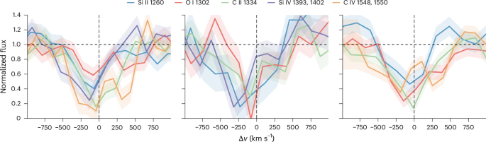
图注：左、中、右分别为A、B、C星系。各金属吸收线先做连续谱归一，再放入相对星系系统红移的速度坐标；阴影为1σ误差。
怎么看这张图：先比较不同离子的吸收速度区间是否重叠，再看整体位于零速度哪一侧。重叠支持总体运动关联，但不证明所有离子来自单一均匀气体。仪器分辨率和线心注入误差限制了对小速度差的解释。 直接核对速度证据和误差口径。
来源与置信度：Nature publisher；source verified；https://media.springernature.com/lw685/springer-static/image/art%3A10.1038%2Fs41550-026-02988-2/MediaObjects/41550_2026_2988_Fig2_HTML.png
图3：离子吸收线心的速度偏移
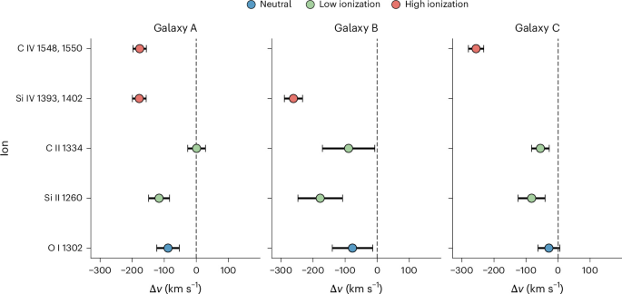
图注：点为各吸收特征相对[O III] λ5008系统红移的最佳拟合速度偏移，颜色区分中性、低电离和高电离离子，误差棒为线型拟合的1σ线心误差。
怎么看这张图：高电离离子有更蓝的倾向，但图中是形式拟合误差，正文真实谱注入测试给出的保守散布可达约133 km/s。应重视多线共同蓝移，避免把每一对点的高低都写成已确证的加速分层。 直接核对速度证据和误差口径。
来源与置信度：Nature publisher；source verified；https://media.springernature.com/lw685/springer-static/image/art%3A10.1038%2Fs41550-026-02988-2/MediaObjects/41550_2026_2988_Fig3_HTML.png
强相关工作
本文以Shapley等2003年的z约3莱曼断裂星系复合谱作为经验参照。复合谱由许多有不同速度偏移的星系叠成，通常更宽、更浅，所以比较主要看共同金属吸收结构及等效宽度比例，不宜把复合线宽当单个高红移星系的速度标准。
FIRE等反馈模拟和较低红移多相外流研究提供了物理解释背景：不同温度、电离状态的气体可一起受反馈影响又拥有不同速度。当前JWST结果把类似诊断推进至z约7—9，但不足以在这些模拟机制之间唯一选择。丰度与曲线增长的基础关系则说明为何饱和和覆盖率是后续高分辨观测要优先打破的退化。
同一事件 / 同类源线索：
相似工作：
基础理论 / 方法工作：
（未提供）
相反观点 / 张力线索：
（未提供）
相关简报
1. Recurrent double-peaked $γ$-ray sub-flares in PKS 1424-418
- 来源：arXiv / astro-ph.HE
- 链接：https://arxiv.org/abs/2609.28932
- 作者：Na Wang, Tong Liu, Jingran Xu
- 公告 / 来源日期：2026-09-25
- 阅读层级：相关简报
- 评分：novelty 7/10，importance 7/10，relevance 10/10，final 9.05/10
- 推荐理由：PKS1424双峰复现形态结合红噪声检验有参考价值，但两个活动期和事后选择限制发现强度，简报呈现。
中文题目：PKS 1424−418的重复双峰线索：两种时间尺度值得跟进，尚非稳定周期
问题、方法与结论：作者对PKS 1424−418两次主要活动期做Fermi-LAT分块、单/双高斯比较和红噪声蒙特卡洛，找到5个有较强拟合支持的双峰候选及1个较弱候选。双峰内部间隔约11.8±2.9天，相邻子耀发间隔约67±10天。两活动期在所采用红噪声模型下的形态假警报率分别为0.0216与0.0006；一万次全光变模拟中未重现两种活动期共同出现。这支持继续研究重复形态，但零次模拟命中不等于零假警报，更不能给每个子峰独立赋同样高显著性。
意义与贡献：新增信息是跨两次活动期比较双峰形态，并把窗口内双高斯优势与红噪声下整体重复概率分开。ACF、PACF和双功率谱只有较弱辅助线索，论文没有发现一个已确认的严格时钟。作为喷流内部结构的线索有参考价值，证据强度还不足以要求完整精读教程。
可借鉴之处：可借鉴的是让模拟光变经历与数据相同的分块、候选窗口和形态检验流程，而非仅对最终挑出的峰算局部概率。作者提出扰动经过准静态再准直激波链、磁声波反射产生第二峰的解释，其约10天和约74天量级与观测相容，可作为后续时变磁流体模型的检验目标。
局限与关注点：窗口合并阈值及红噪声斜率来自实际数据，需要检验对这些选择的敏感性；目前只有两个主要活动期。再准直与波反射只是数量级一致性解释，未由本文独立成像确认，也不是唯一机制。未来应结合VLBI结构、新活动期的预先定义搜索和多波段同步资料，检验两种尺度能否持续重现。
图2：两次活动期的重复双峰候选
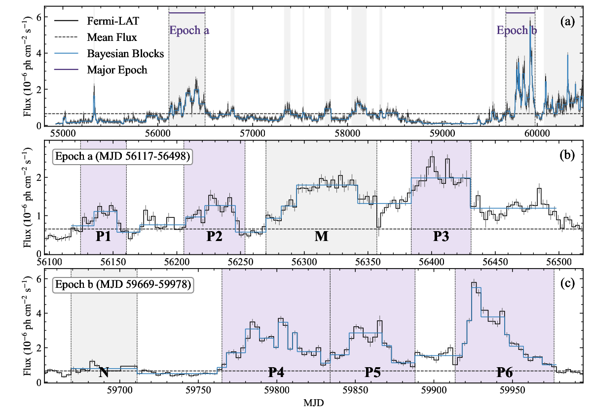
图注：a展示PKS 1424−418完整Fermi-LAT伽马光变及贝叶斯分块，HOP方法识别耀发，灰区为高态；b、c分别放大活动期a、b。
怎么看这张图：双峰间隔约12天与相邻子耀发约67天是两种时间尺度。先看原始采样及分块再判断形态，不能把两个活动期的相似形状直接称为长期稳定周期。 支持本篇核心证据及其适用边界。
来源与置信度：arXiv HTML；source verified；https://arxiv.org/html/2609.28932v1/f2.png
2. A Helical Trajectory Interpretation of a Multi-wavelength Event in a Blazar S5 0716+714
- 来源：arXiv / astro-ph.HE
- 链接：https://arxiv.org/abs/2609.30053
- 作者：Zhihao Ouyang, Jingyu Wu, Hubing Xiao, Zhijian Luo, Zhu Chen, Shaohua Zhang, Liang Chen, Jianzhen Chen
- 公告 / 来源日期：2026-09-25
- 阅读层级：相关简报
- 评分：novelty 7/10，importance 7/10，relevance 10/10，final 9.05/10
- 推荐理由：S50716把非等间隔峰与二维结运动联合拟合，几何模型有诊断价值但唯一性未立，列简报。
中文题目：S5 0716+714的变长准周期：光变与射电结轨迹联合支持一种螺旋解释
问题、方法与结论：2014年7月至2015年6月，S5 0716+714伽马光变出现五次增强，峰间距逐渐增长。作者对固定3天分箱数据做加权小波分析，提取约54—67天的周期脊，并以十万条匹配红噪声及流量分布的模拟检验。在扫描20—120天周期范围后，全局显著性约2.60—2.64σ，低于局部约3.26σ。随后用圆锥面螺旋运动的发射团模型，同时拟合伽马流量和VLBA射电结B10的二维位置，把变化的多普勒放大与移动轨迹联系起来。
意义与贡献：比只拟合光变更有价值的是引入独立的天球位置约束，使几何解释受到额外检验。该信号是短时段内特征尺度变长的线索，不是多年相干的严格周期；全局显著性仍属提示水平。本文更适合保留可检验几何和统计口径的简报。
可借鉴之处：方法上可借鉴在每条模拟中重复小波脊搜索、再用全范围最大统计量校正周期选择。同时拟合赤经、赤纬与流量能暴露单一多普勒模型的退化；残差图比仅展示平滑重建曲线更有诊断价值。作者还比较了不同背景流量形式，最终采用二次多项式。
局限与关注点：模型假设发射团沿指定螺旋轨迹运动且本征辐射按所选方式处理，位置吻合不能证明螺旋磁场的唯一动力学起源。原始自适应分箱数据的滤波图只作形态展示，定量检验使用3天分箱。后续应扩展独立活动期、检验时间窗口选择及替代轨迹，不能将模型推得的多普勒因子当作独立观测。
图5：伽马光变与射电结位置的联合拟合
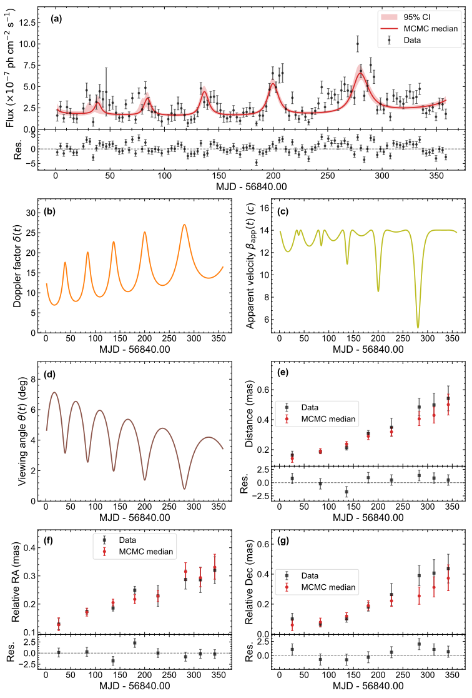
图注：a为S5 0716+714伽马光变、MCMC中位模型及95%区间，下小图为残差；b—d为模型多普勒因子、视超光速和视角随时间变化；e—g比较B10的径向距离、赤经和赤纬观测与模型，并列残差。
怎么看这张图：光变与天球位置同时约束比单拟合光变更有价值，但中间三幅是推断量，不是独立测量。全局显著性约2.6σ，螺旋模型仍属于可行解释。 支持本篇核心证据及其适用边界。
来源与置信度：arXiv HTML；source verified；https://arxiv.org/html/2609.30053v1/B10_mcmc_credible_intervals_residual.svg
3. Exceptional Gamma-Ray Flaring Activity of the Blazar S4 0954+65 in Early 2025
- 来源：arXiv / astro-ph.HE
- 链接：https://arxiv.org/abs/2609.29873
- 作者：Zhihao Ouyang, Jingyu Wu, Hubing Xiao, Lili Yang, Shangchun Xie, Shaohua Zhang, Zhijian Luo, Jianzhen Chen
- 公告 / 来源日期：2026-09-25
- 阅读层级：相关简报
- 评分：novelty 6/10，importance 7/10，relevance 10/10，final 8.75/10
- 推荐理由：S40954耀发的多波段/VLBA关联对伽马发射区有实用参考，但仍是常规源个例建模，列简报。
中文题目：S4 0954+65的2025年耀发：多波段与VLBA补充喷流约束，射电时延仍不稳
问题、方法与结论：作者结合Fermi-LAT、X射线、光学/紫外、230 GHz和43 GHz VLBA资料研究2025年初的S4 0954+65耀发。zDCF显示伽马相对光学约领先3.22天，所用检验下约3.09σ；相对射电约18.26天的峰只有约2.17σ，而且射电主耀发附近有较大缺测，因此可能高估时延。X射线没有显著相关。新射电结K25外推喷出时间与伽马耀发在误差内相容，结合变硬趋势，支持喷流扰动参与耀发的解释。
意义与贡献：这是一个有多波段和结构信息的新增活动期，能为发射区位置和能量预算提供具体约束，但主要物理框架延续已有耀发研究。论文的有用增量在于将时延、射电结构及能谱放在一起，而不是发现了普适的新辐射机制，因此采用简报呈现。
可借鉴之处：作者先用谱峰和变化时间检查纯单区同步自康普顿模型，发现高态需要极端多普勒因子和低磁场，继而加入尘埃环外康普顿。轻子方案的能量预算较经济，轻子—强子方案需要大得多的质子功率。这样的物理一致性检查比只比较两条都能穿过数据点的SED曲线更有意义。
局限与关注点：射电缺测使18.26天不能转成精确空间距离；新结同时出现也不是发射区已被唯一定位。强子方案虽昂贵但未被本文排除，所示中微子或仪器灵敏度比较不等于探测预言已获确认。更密集毫米监测、偏振和独立多信使约束才可能进一步区分机制。
图3：S4 0954+65的多波段时延
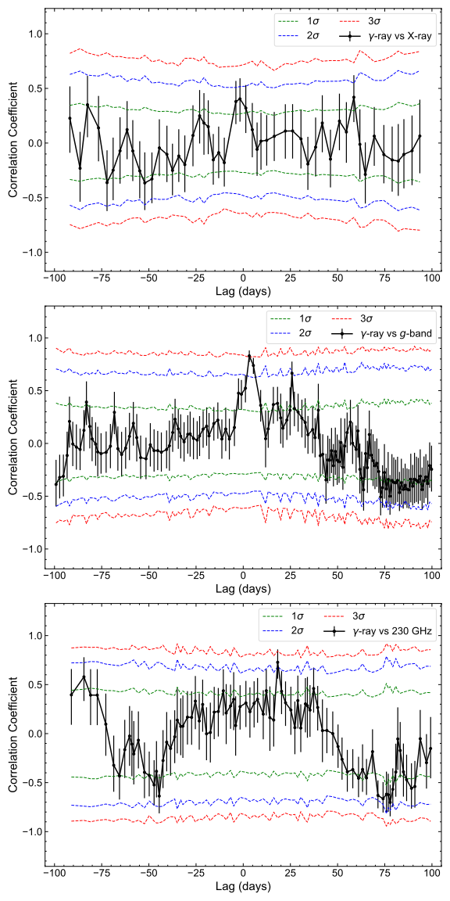
图注：上、中、下分别为伽马与X射线、ZTF g波段、SMA 230 GHz的zDCF。正时延表示伽马领先；绿、蓝、红虚线分别为1σ、2σ、3σ显著性水平。
怎么看这张图：光学相关比射电可靠；射电18.26天峰仅约2.17σ且主耀发附近缺测，不能据此精确定位两发射区距离。X射线没有显著相关。 支持本篇核心证据及其适用边界。
来源与置信度：arXiv HTML；source verified；https://arxiv.org/html/2609.29873v1/zDCF_combine.svg
4. Composition-dependent acceleration of UHE Cosmic Rays in AGN electric fields
- 来源：arXiv / astro-ph.HE
- 链接：https://arxiv.org/abs/2609.28668
- 作者：E. Koutsoumpou, I. Contopoulos, A. Nathanail, A. Loules, D. Kazanas
- 公告 / 来源日期：2026-09-25
- 阅读层级：相关简报
- 评分：novelty 7/10，importance 7/10，relevance 9/10，final 8.70/10
- 推荐理由：把AGN电场加速的随机取样映射到Auger簇射矩，有可迁移方法；注入模板及传播假设较强，暂作简报。
中文题目：AGN电势加速能否解释UHECR组成？附近、较少质子的模板更合适，但模型仍简化
问题、方法与结论：作者把AGN黑洞附近的电势能增益写成电荷乘电势，再用对数正态的采样效率描述粒子经历不同加速路径，经过半解析传播后拟合Auger DNN 2025的簇射极大深度均值和宽度。分别固定传播距离10、30、100 Mpc，并比较两种预设注入组成；较近距离拟合更好，质子较少的模板相对占优，但含约53%氢的另一模板在近距离也仍可行。数据主要约束典型实际采样电势，效率均值与最大电势强烈退化。
意义与贡献：工作将“AGN能量够高”推进为可与组成敏感观测比较的前向模型，并同时利用簇射均值与宽度。不过它未联合拟合UHECR能谱、绝对流量和到达方向，因此不能宣称已解释整个UHECR族群，也不能把较近距离偏好当作独立测出源距离。
可借鉴之处：可借鉴固定蒙特卡洛粒子库使似然可重复，以及分别考察传播距离和注入模板的设计。后续模型可自由拟合元素比例，并将谱与各向异性一起纳入，以打破效率—电势退化。M87等对象在文中只是满足假设的参照，不是被识别出的唯一起源。
局限与关注点：传播简化忽略EBL、部分核反应通道及独立次级核子传播，加速区内能损也未自洽计入；簇射转换固定EPOS-LHC。误差将统计与系统逐点合并且忽略相关性，使小于1的约化χ²不能解释为异常完美的拟合，模板间Δχ²也不是校准后的发现显著性。
图1：AGN加速模型与簇射极大深度
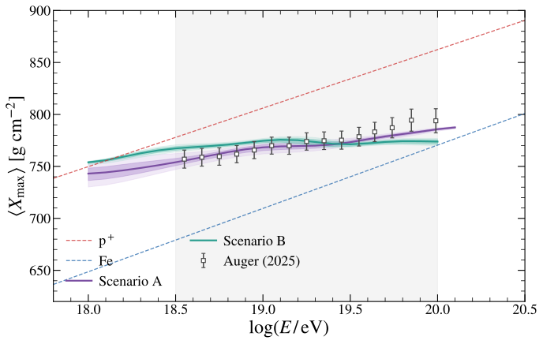
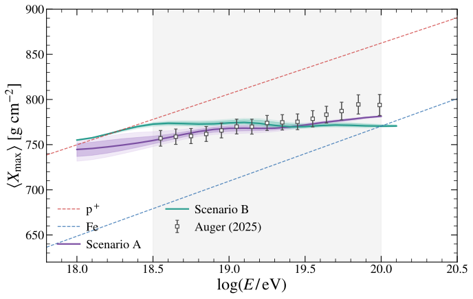
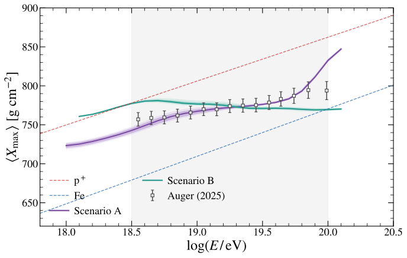
图注：三幅依次固定传播距离10、30、100 Mpc。A为Auger启发的注入组成，B为降低氢比例的三倍太阳金属模板、归一后约53%氢；深浅带为68%及95%后验预测区间，虚线为纯质子和纯铁参照，方点为Auger DNN 2025数据，灰区为拟合能段。展示曲线做了0.15 dex高斯平滑，似然使用未平滑值。
怎么看这张图：较近距离的符合度更好不等于识别了源距离，更不等于找到了M87。这里只检验Xmax均值，正文还用其宽度；未联合拟合能谱与流量，传播和强子模型的简化仍限制结论。 支持本篇核心证据及其适用边界。
来源与置信度：arXiv HTML；source verified；https://arxiv.org/html/2609.28668v1/combined_xmax_mean_d10.svg；https://arxiv.org/html/2609.28668v1/combined_xmax_mean_d30.svg；https://arxiv.org/html/2609.28668v1/combined_xmax_mean_d100.svg
5. Extending multi-messenger constraints on neutron star matter through the inclusion of direct Urca cooling
- 来源：arXiv / astro-ph.HE
- 链接：https://arxiv.org/abs/2609.30112
- 作者：M. Dio Danarianto, Guilherme Grams, Thibeau Wouters, Tim Dietrich
- 公告 / 来源日期：2026-09-25
- 阅读层级：相关简报
- 评分：novelty 7/10，importance 8/10，relevance 8/10，final 8.70/10
- 推荐理由：将直接Urca组分信息并入EOS推断有实质补充，但宏观参数提升有限，简报明确相对前作增量。
中文题目：将直接Urca冷却接入状态方程推断：增加组成信息，对半径的收紧却有限
问题、方法与结论：作者扩展jester框架，在β平衡物质中自洽计算电子、μ子和质子比例，从而判断快速中微子冷却的直接Urca过程何时可发生。将快速或缓慢冷却对象对应的质量条件，与核理论、NICER及引力波约束联合；对元模型和扩展Skyrme、两种核子模型失效密度设置做对照。结果是冷却条件可增加质子比例的信息，但在已有多信使约束上，对半径、潮汐形变等宏观量的进一步影响较小。
意义与贡献：半径和潮汐形变主要约束整体压强关系，冷却则额外依赖微观组成。本文把两类信息在同一框架中对接，说明“宏观后验几乎没变”不等于新增数据没有作用。但它是给定冷却解释下的条件推断，尚未测出中子星内部唯一组成。
可借鉴之处：方法价值在于对核子描述仍有效的密度直接求Urca阈值，在更高密度的未知组成分支中边缘化阈值，而不假装任意状态方程都能提供质子比例。不同模型给出相似定性结果有帮助，但比较前应区分“组成有定义的范围”与“组成取值被约束多紧”。
局限与关注点：最重要限制是部分快速冷却源的质量本就从热演化或光谱模型导出，再用其约束冷却会形成依赖甚至循环。HESS J1731−347低质量解释也存在争议，文中将其作为较宽松的原理示例。独立的质量、温度和年龄测量，以及对其他快速冷却机制的比较，才是提升可靠性的下一步。
图5：冷却条件主要约束组成
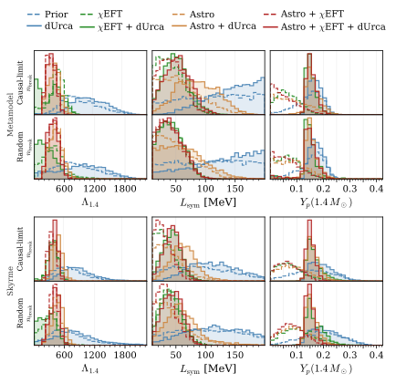
图注：左、中、右分别为1.4太阳质量星的潮汐形变、对称能斜率和中心质子比例分布；上组为元模型，下组为扩展Skyrme构造，各含因果极限及随机核子模型失效密度。虚线与实线分别为先验和后验，不同颜色代表核理论、天体观测及直接Urca约束组合。
怎么看这张图：比较加入冷却条件前后右列与左列的变化。组成后验移动比宏观量更明显，但部分冷却源质量本身依赖热模型，因此不能称为完全独立的新质量测量。 支持本篇核心证据及其适用边界。
来源与置信度：arXiv HTML；source verified；https://arxiv.org/html/2609.30112v1/Lambda14_Lsym_random_causal_histograms_metamodel_Skyrme.svg
6. Constraining the Quadratic-mode Amplitude Coupling in GW250114
- 来源：arXiv / astro-ph.HE
- 链接：https://arxiv.org/abs/2609.28953
- 作者：Yuxin Yang, Changfu Shi, Yi-Ming Hu
- 公告 / 来源日期：2026-09-25
- 阅读层级：相关简报
- 评分：novelty 8/10，importance 8/10，relevance 7/10，final 8.65/10
- 推荐理由：GW250114二阶模式耦合系数直接推断值得关注，但当前不能区分理论预言，作为简报。
中文题目：GW250114的非线性振铃振幅比：与理论相容，但尚不能区分不同自旋关系
问题、方法与结论：作者对GW250114峰值后的数据，用220基模、221泛音和220×220二阶模做贝叶斯分析，比较二阶模与母模的振幅耦合关系，并扫描振铃起始时刻。所得后验较宽，与数种理论关系的最大偏离约1.3σ，不能显著区分它们。加入频率接近的440线性模后，在代表时刻振幅比中位数几乎不变，但区间宽度增大约52%，说明模式内容会改变约束强度。
意义与贡献：这是把非线性振铃的振幅关系拿到真实事件上检验的有用尝试，超出只问某个频率是否与广义相对论相容。但相容性并非高精度确认，也不是这篇分析独立证明二阶模存在的发现显著性；目前主要输出仍是条件性振幅约束。
可借鉴之处：可借鉴扫描开始时间、改变外参以及加入遗漏模式做注入恢复的组合。早起始时刻信号强却可能不满足三模近似，晚起始时刻更接近振铃却失去信噪比；把整个时刻依赖画出，比只挑最紧一组结果透明。额外440模的测试直接量化了模型不完整带来的影响。
局限与关注点：基准分析固定距离411 Mpc和倾角0.76弧度等外参，它们与振幅强退化，因此结果不是已完整边缘化所有几何不确定性的测量。先验收缩的信息增益也依赖先验宽度，不能当发现概率。需要更多高信噪事件及与并合前的双星旋近信息联合推断，才能进一步检验自旋依赖。
图1：非线性振铃约束的起始时刻依赖
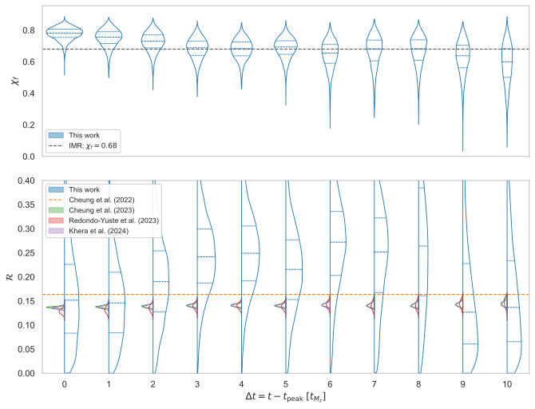
图注：上图为残余黑洞自旋随分析起始时刻的后验，灰虚线为完整并合波形的参考值；下图为220×220模的振幅比。每个小提琴右半为观测后验、左半为把同一自旋后验映射到不同理论关系的预测，橙虚线为无自旋依赖的预测，内部虚线为四分位数。
怎么看这张图：宽分布覆盖多种理论，表示目前与它们相容，不能解释成对所有模型的高精度确认。越靠近峰值越要注意三模近似失效；后移又损失信噪比。 支持本篇核心证据及其适用边界。
来源与置信度：arXiv HTML；source verified；https://arxiv.org/html/2609.28953v1/ratio_chi_vs_start_time.svg
7. A Census of Stellar-mass Black Holes in the Milky Way with POPKIN. I. Isolated Black Holes
- 来源：arXiv / astro-ph.HE
- 链接：https://arxiv.org/abs/2609.29211
- 作者：Jian-Guo He, Yong Shao, Yu-Dong Nie, Gui-Yu Wang, Xiao-Tian Xu, Chen Wang, Xiao-Jie Xu, Xiang-Dong Li
- 公告 / 来源日期：2026-09-25
- 阅读层级：相关简报
- 评分：novelty 7/10，importance 7/10，relevance 8/10，final 8.35/10
- 推荐理由：POPKIN连接恒星演化、银河轨道和孤立黑洞搜寻；丰度、X射线与微透镜均为情景预测，适合简报。
中文题目：POPKIN预测银河孤立黑洞：种群与运动一起算，发现数量仍取决于选择效率
问题、方法与结论：POPKIN将单星和双星演化、银河恒星形成与金属历史、出生踢及轨道演化连在一起，比较10套超新星、回落、传质和共同包层处方。基准模型给银河约4000万个孤立黑洞、太阳1 kpc内约8万个；替代超新星处方可给约1—2亿个，显示总量明显依赖形成模型。作者再计算星际吸积和微透镜可观测量，类Roman五年、约1.70平方度巡天的基准结果约356个本征透镜事件。
意义与贡献：模型把出生质量与速度如何变成今天的空间分布及观测子样本显式连接，有助于理解X射线和微透镜会看到不同黑洞族群。其价值是可比较的前向种群框架，不是测得银河真实黑洞总数；不同处方间数倍变化本身就是重要不确定性。
可借鉴之处：吸积信号偏爱相对气体运动慢的黑洞，微透镜提供较互补的选择。图32将事件时间尺度与角爱因斯坦半径联合展示，可区分近距离、速度和质量的混合影响。模拟还能检验出生踢在银河轨道演化后保留多少信息，不能把当前特殊速度一对一当出生踢。
局限与关注点：约356是尚未加入真实观测节奏、混叠、天体测量门槛及事件恢复效率的本征数，不能写成保证发现量；实际可能少数倍至数十倍。X射线亮源数量同样敏感于吸积与辐射效率。后续应把完整选择函数和误识别背景接入，再用真实样本比较超新星处方。
图32：类Roman巡天的本征黑洞透镜事件
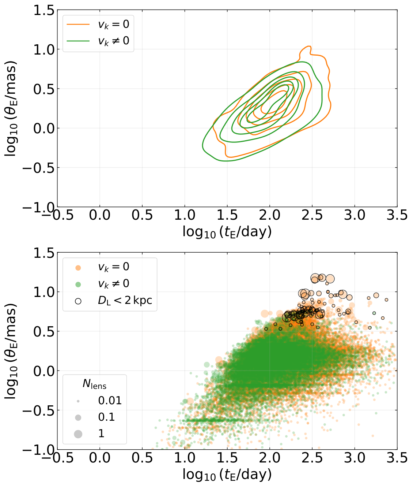
图注：横纵坐标为爱因斯坦穿越时间与角爱因斯坦半径；上图为加权核密度轮廓，下图为事件，点大小正比于透镜事件权重。橙绿分别为无出生踢与有出生踢的孤立黑洞，黑空心圈标2 kpc以内透镜。
怎么看这张图：右上角的大角尺度长事件常由近距离透镜产生，不能只归因为高质量。此图尚未施加真实观测节奏、混叠和恢复效率，因此约356个本征事件并不是保证能发现的数量。 支持本篇核心证据及其适用边界。
来源与置信度：arXiv HTML；source verified；https://arxiv.org/html/2609.29211v1/IBH_lens_roman_tE_theta_E.png
说明
评分由 LLM 给出初评，再由本地阈值策略过滤；IACT、TeV 伽马射线和高能中微子天文学按重点方向处理。